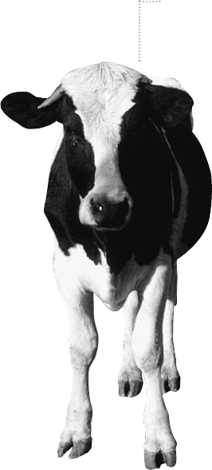
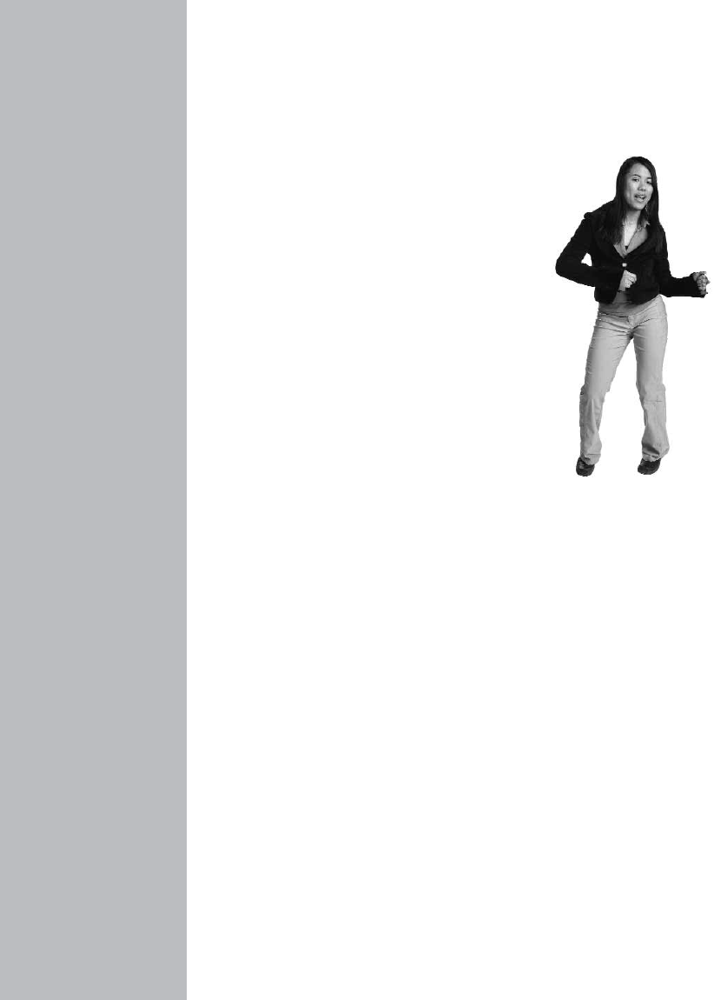
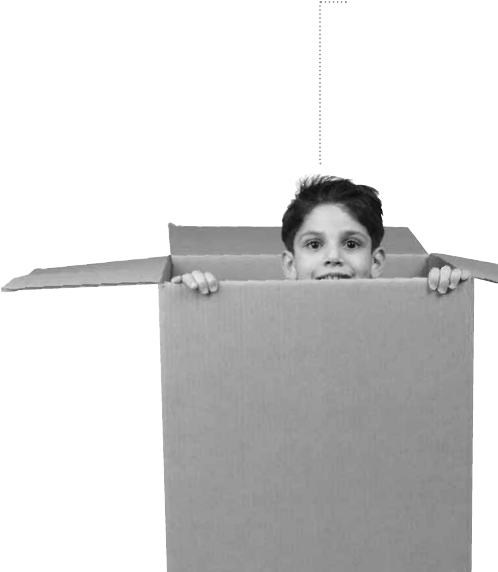
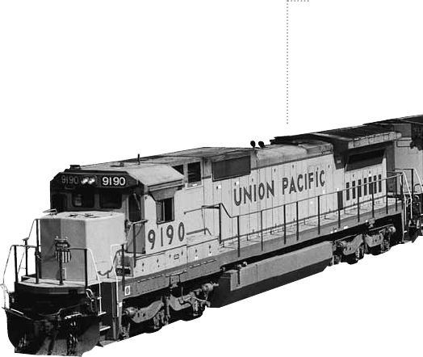
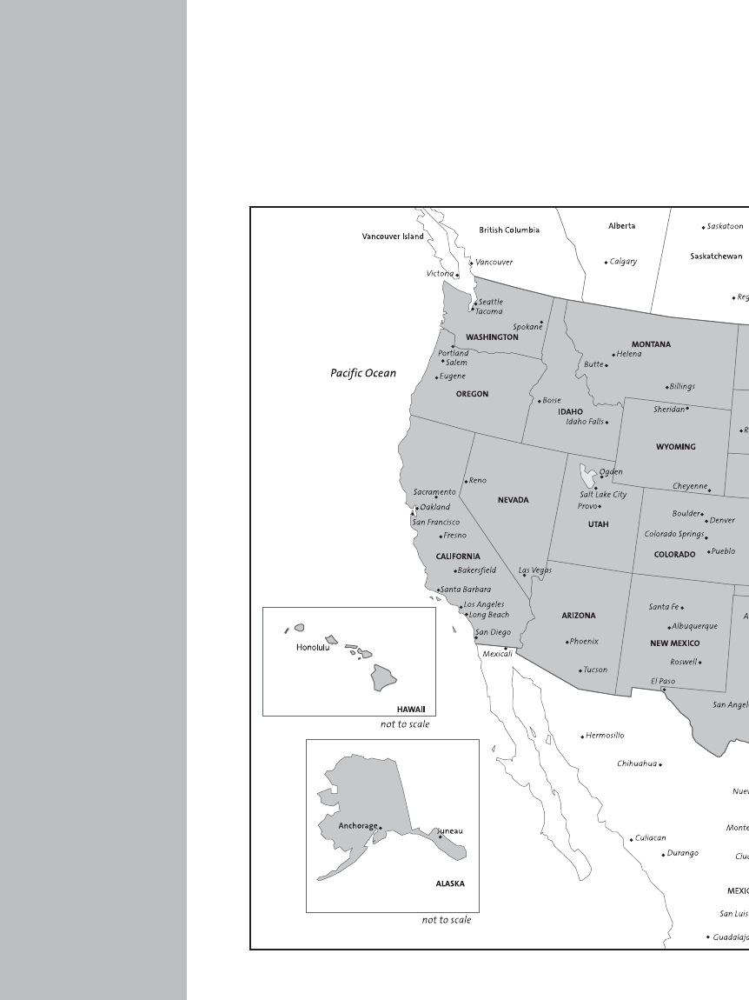

A list of words used in
Special English programs
on radio, television
and the Internet
EDITION
Word Book
SpecialEnglish
Word Book
Voice of America
Washington, D.C. 20237
www.VOASpecialEnglish.com
A list of words used in Special English
programs on radio, television and the Internet
EDITION
AB
DFG
IK
L N
PQ S
UV
YZ
4
Table of Contents
Foreword . . . . . . . . . . . . . . . . . . . . . . . . . . . . . . . . . . . . . . . . .7
Parts of Speech . . . . . . . . . . . . . . . . . . . . . . . . . . . . . . . . . . . .9
Word List & Definitions . . . . . . . . . . . . . . . . . . . . . . . . . . .10
Special Words & Information . . . . . . . . . . . . . . . . . . . . .111
Common Prefixes . . . . . . . . . . . . . . . . . . . . . . . . . .113
Common Expressions . . . . . . . . . . . . . . . . . . . . . .115
Numbers, Days, Months . . . . . . . . . . . . . . . . . . . .116
Chemical Elements . . . . . . . . . . . . . . . . . . . . . . . .119
Organs of the Body . . . . . . . . . . . . . . . . . . . . . . . .121
Computer Terms . . . . . . . . . . . . . . . . . . . . . . . . . .122
Business Terms . . . . . . . . . . . . . . . . . . . . . . . . . . . .124
United States Branches of Government . . . . . . .126
Map of the United States . . . . . . . . . . . . . . . . . . .128
Map of the World . . . . . . . . . . . . . . . . . . . . . . . . .130
Presidents of the United States . . . . . . . . . . . . . .132
5
www.VOASpecialEnglish.com
6
Foreword
The Voice of America has been broadcasting programs in
Special English since 1959. Special English is VOA’s
method of communicating with English learners around
the world in a way that is easy to understand. The vocabu-
lary is
limited to about 1,500 words. The sentences are short.
The speed is slower than normal.
Special English programs are broadcast on the Voice of
America, on radio stations around the world, on satellite
television and on the Internet. These programs present the
latest world news as well as information about science,
medicine, education, economics, American history and life
in the United States.
This book explains the meaning of the words used in our
broadcasts and on our Web site.The first edition was
published in 1962. The list of words has changed since
then, as the language itself has changed. We thank all
those people at VOA who started the process and who
helped make this edition possible.
You can download transcripts and audio files of our
programs at our Web site, www.VOASpecialEnglish.com.
You can also get details of where to find our programs on
radio and television.
VOA Special English
Washington, D.C.
2009
7
www.VOASpecialEnglish.com
baby
happy
they
and
jump
8
in
www.VOASpecialEnglish.com
9
Parts of Speech
n. (noun) – a name word
v. (verb) - an action word
ad. (adjective/adverb) – a describing word
prep. (preposition) – a word used to show a relation
pro. (pronoun) – a word used in place of a noun
conj. (conjunction) – a joining word

a (an) – advise
10
A
A
a (an) – ad. one; any; each
able – v. having the power to do something
about – adj. almost (“about half”); of or having a relation to
(“We talk about the weather.”)
above – ad. at a higher place
abuse – n. bad treatment causing harm or injury
accept – v. to agree to receive
accident – n. something that happens by chance or mistake;
an unplanned event
accuse – v. to say a person is responsible for an act or crime;
to make a statement against someone
across – ad. from side to side; to the other side
act – v. to do something
activist – n. one who seeks change through action
actor – n. someone acting in a play or show
add – v. to put (something) with another to make it larger; to
say more
administration – n. the executive part of a government,
usually headed by a president or prime minister
admit – v. to accept (“admitted to the United Nations”); to
express one’s guilt or responsibility (“He admitted that
what he did was wrong.”)
adult – n. a grown person
advertise – v. to show or present the qualities of a product
to increase sales
advise – v. to help with information, knowledge or ideas in
making a decision
affect – v. to produce an effect on; to influence (“A lack of
sleep affected the singer’s performance.”)
afraid – ad. feeling fear
after – ad. later; behind
again – ad. another time; as before
against – ad. opposed to; not agreeing with something
age – n. how old a person or thing is
agency – n. an organization that is part of a larger group
(“an agency of the United Nations”)
aggression – n. an attack against a person or country; the
violation of a country’s borders
ago – ad. of time past; before now
agree – v. to have the same belief as someone; to be willing
to do something
agriculture – n. farming
aid – v. to help; to support; n. help, assistance
aim – v. to point a gun at;
n. a goal or purpose
air – n. the mixture of gases
around the earth, mostly
nitrogen and oxygen,
that we breathe
air force – n. a military
organization
using airplanes
airplane – n. a vehicle with
wings that flies
airport – n. a place where
airplanes take off and land
album – n. a collection of recorded music
airplane
affect – album
A
www.VOASpecialEnglish.com
11

alcohol – n. a strong, colorless liquid, usually made from
grain, used in drinks or in industrial products
alive – ad. having life; not dead
all – ad. everything; everyone; the complete amount
ally – n. a nation or person joined with another for a
special purpose
almost – ad. a little less than completely
alone – ad. separated from others
along – ad. near or on (“along the road”)
already – ad. before now; even now
also – ad. added to; too
although – conj. even if it is true that
always – ad. at all times; every time
ambassador – n. a nation’s highest diplomatic representa-
tive (to another government)
amend – v. to add to or to change (a proposal or law)
ammunition – n. the bullets or shells fired from guns
among – ad. in or part of (a group)
amount – n. the number, size or weight of anything
anarchy – n. a lack of order; lawlessness
ancestor – n. a family member from the past
ancient – ad. very old; long ago
and – conj. also; in addition to; with
anger – n. a strong emotion against someone or something
animal – n. a living creature that moves, such as a dog
or cat
anniversary – n. a yearly celebration or observance of an
event that happened in the past
A
12
alcohol – anniversary
13
www.VOASpecialEnglish.com
A
announce – artillery
art
announce – v. to make known publicly; to declare officially
another – ad. one more; a different one
answer – n. a statement produced by a question; v. to make
a statement after being asked a question
antibodies – n. special proteins produced in the blood that
kill harmful bacteria
any – ad. one or more of no special kind
apologize – v. to express regret for a mistake or accident for
which one accepts responsibility
appeal – v. to take to a higher court, person or group for a
decision; to call on somebody for help
appear – v. to show oneself; to come into sight;
to seem
appoint – v. to name; to choose (“appoint a judge”)
approve – v. to agree with; to agree to support
archeology – n. the scientific study of past human life
and activities
area – n. any place or part of it
argue – v. to offer reasons for or against something; to
dispute; to disagree
arms – n. military equipment; weapons
army – n. military ground forces
around – ad. on every side (of)
arrest – v. to seize a person for legal action; to take as
a prisoner
arrive – v. to come to a place, especially at the end of a trip
art – n. expressions or creations by humans, such as
paintings, music, writing or statues
artillery – n. big guns

as – available
14
B
as – conj. equally (“as fast as”); when; while
ash – n. the part left after something burns
ask – v. to question; to say something is wanted (“We ask
the teacher questions every day.”)
assist – v. to help
astronaut – n. a person who travels in space
astronomy – n. the scientific study of stars and
the universe
asylum – n. political protection given by a government to a
person from another country
at – prep. in or near (“at the edge”); where (“look at”); when
(“at noon”)
atmosphere – n. the gases surrounding any star or planet
atom – n. a very small part of all things; the smallest part
of an element that can join with parts of other elements
attach – v. to tie together; to connect
attack – n. a violent attempt to damage, injure or kill; v. to
start a fight
attempt – v. to work toward something; to try; to make
an effort
attend – v. to be present at
attention – n. close or careful observing of, or listening to,
someone or something (“The student paid attention to
his teacher.”)
automobile – n. a vehicle with wheels used to carry people;
a car
autumn – n. the time of the year between summer
and winter
available – ad. present and ready for use; willing to serve or
help. (“There was a list of available candidates.”)
average – n. something (a number) representing the middle;
ad. common; normal
avoid – v. to stay away from
awake – ad. not sleeping
award – n. an honor or prize for an act or service
away – ad. not near
B
baby – n. a newly born creature
back – n. the part behind the front; ad. the other way from
forward
bacteria – n. living things that are one cell and can be seen
only through a microscope; some cause disease
bad – ad. wrong; acting against the law; not good
balance – v. to make two sides or forces equal
ball – n. something round
balloon – n. a device of strong, light material that rises
when filled with gas lighter than air
ballot – n. a piece of paper used for voting
ban – v. to not permit; to stop; n. an official
restriction
bank – n. an organization that keeps and
lends money
bar – v. to prevent or block
barrier – n. anything that blocks or makes an
action difficult
base – n. a military center; v. to establish as a fact
(“Her research was based on experiments.”)
baby
average – base
B
www.VOASpecialEnglish.com
15

battle – bird
16
B
battle – n. a fight between opposing armed forces
be – v. to live; to happen; to exist
beat – v. to hit again and again
beauty – n. that which pleases the eye, ear or spirit
because – prep. for the reason that (“He left because he was
sick.”)
become – v. to come to be
bed – n. a sleeping place
before – prep. earlier
begin – v. to do the first part of an action; to start
behavior – n. the way in which a person or animal acts
(“The child’s behavior was bad because he fought with other
children.”)
behind – ad. at the back of; in back of
believe – v. to think; to feel sure of; to accept as true;
to trust
belong – v. to be owned by; to be a member of
below – ad. lower than
best – ad. the most good
betray – v. to turn against; to be false to
better – ad. more good than
between – ad. in the space or time that separates; from one
to the other (“talks between two nations”)
big – ad. of great size; not small
bill – n. a legislative proposal
biology – n. the scientific study of life or living things in all
their forms
bird – n. a creature that flies
bite – v. to cut with the teeth
black – ad. dark; having the color like that of the night sky
blame – v. to accuse; to hold responsible
bleed – v. to lose blood
blind – ad. not able to see
block – v. to stop something from being done; to
prevent movement
blood – n. red fluid in the body
blow – v. to move with force, as in air (“The wind blows.”)
blue – ad. having the color like that of a clear sky
boat – n. something built to travel on water that carries
people or goods
body – n. all of a person or animal; the remains of a person
or animal
boil – v. to heat a liquid until it becomes very hot
bomb – n. a device that explodes with great force; v. to
attack or destroy with bombs
bone – n. the hard material in the body
book – n. a long written work
for reading
border – n. a dividing line
between nations
born – v. to come to life; to come
into existence
borrow – v. to take as a loan
both – ad. not just one of two, but
the two together
bottle – n. a container, usually
made of glass, to hold liquid
bed
bite – bottle
B
www.VOASpecialEnglish.com
17

bottom – ad. the lowest part of something
box – n. something to put things into; a container, usually
made of paper or wood
boy – n. a young male person
boycott – v. to refuse to take part in or deal with
brain – n. the control center of thought, emotions and body
activity of all creatures
brave – ad. having no fear
bread – n. a food made from grain
break – v. to divide into parts by force; to destroy
breathe – v. to take air into the body and let it out again
bridge – n. a structure built over a waterway, valley or road
so people and vehicles can cross from one side to the
other
brief – ad. short; not long
bright – ad. giving much light; strong and clear in color
bring – v. to come with something
broadcast – v. to send information, stories or music by radio
or television; n. a radio or television program
brother – n. a male with the same father or mother as
another person
brown – ad. having the color like that of coffee
budget – n. a spending plan
build – v. to join materials together to make something
building – n. anything built for use as a house, factory,
office, school, store or place of entertainment
bullet – n. a small piece of metal shot from a gun
burn – v. to be on fire; to destroy or damage by fire
C
18
bottom – burn
19
www.VOASpecialEnglish.com
C
burst – cancel
camera
burst – v. to break open suddenly
bury – v. to put into the ground and cover with earth
bus – n. a public vehicle to carry people
business – n. one’s work; buying and selling to earn money;
trade
busy – ad. doing something; very active
but – conj. however; other than; yet
buy – v. to get by paying something, usually money
by – conj. near; at; next to (“by the road”); from (“a play by
William Shakespeare”); not later than (“by midnight”)
C
cabinet – n. a group of ministers that helps lead
a government
call – v. to give a name to (“I call myself John.”); to ask for
or request (“They called for an end to the fighting.”)
calm – ad. quiet; peaceful; opposite tense
camera – n. a device for taking pictures
camp – n. a place with temporary housing
campaign – n. a competition by opposing
political candidates seeking support
from voters; a connected series of
military actions during a war
can – v. to be able to; to have the right to;
n. a container used to hold liquid or
food, usually made of metal
cancel – v. to end; to stop

cancer – cell
20
C
cancer – n. a disease in which dangerous cells grow quickly
and destroy parts of the body
candidate – n. a person who seeks or is nominated for an
office or an honor
capital – n. the official center of a government; the city
where a country’s government is
capture – v. to make a person or animal a prisoner; to seize
or take by force; to get control of
car – n. a vehicle with wheels used to carry people; an auto-
mobile; a part of a train
care – v. to like; to protect; to feel worry or interest
career – n. a chosen profession; a person’s working life
(“The actor’s career lasted for thirty years.”)
careful – ad. acting safely; with much thought
carry – v. to take something or someone from one place
to another
case (court) – n. a legal action
case (medical) – n. an incident of disease (“There was only
one case of chicken pox at the school.”)
cat – n. a small animal that often lives with humans
catch – v. to seize after a chase; to stop and seize with
the hands
cause – v. to make happen; n. the thing or person that pro-
duces a result
ceasefire – n. a halt in fighting, usually by agreement
celebrate – v. to honor a person or event with
special activities
cell – n. a small mass of living material that is part of all
plants and animals
center – n. the middle of something; the place in the middle;
a place that is the main point of an activity
century – n. one hundred years
ceremony – n. an act or series of acts done in a special way
established by tradition
chairman – n. a person leading a meeting or an
organized group
champion – n. the best; the winner
chance – n. a possibility of winning or losing or
that something will happen
change – v. to make different; to become different
charge – v. to accuse someone of something,
usually a crime; n. a statement in which
someone is accused of something
chase – v. to run or go after someone or
something
cheat – v. to get by a trick; to steal from
cheer – v. to shout approval or praise
chemicals – n. elements found in nature or
made by people; substances used in the
science of chemistry
chemistry – n. the scientific study of substances,
what they are made of, how they act under
different conditions, and how they form
other substances
chief – n. the head or leader of a group;
ad. leading; most important
child – n. a baby; a boy or girl
children – n. more than one child
choose – v. to decide between two or more
carry
center – choose
C
www.VOASpecialEnglish.com
21
chromosome – n. a line of genes; most human cells contain
46 chromosomes
circle – n. a closed shape that has all its points equally
distant from the center, like an “O”
citizen – n. a person who is a member of a country by birth
or by law
city – n. any important large town
civilian – ad. not military
civil rights – n. the political, economic and social rights
given equally to all people of a nation
claim – v. to say something as a fact
clash – n. a battle; v. to fight or oppose
class – n. a group of students who meet to study the same
subject; also a social or economic group. (“They were
members of the middle class.”)
clean – v. to make pure; ad. free from dirt or harmful
substances (“clean water”)
clear – ad. easy to see or see through; easily
understood
clergy – n. a body of officials within a
religious
organization
climate – n. the normal weather
conditions of a place
climb – v. to go up or down something
by using the feet and sometimes the
hands
clock – n. a device that measures
and shows time
close – v. to make something not open; ad. near to
clock
chromosome – close
22
C
cloth – n. a material made from plants, chemicals, animal
hair and other substances
clothes – n. what people wear
cloud – n. a mass of fog high in the sky
coal – n. a solid black substance used as fuel
coalition – n. forces, groups or nations joined together
coast – n. land on the edge of the ocean
coffee – n. a drink made from the plant of the same name
cold – ad. not warm; having or feeling great coolness or a
low temperature
collapse – v. to fall down or inward
suddenly; to break down or fail
suddenly in strength, health or
power. (“The building collapsed in the
earthquake.” “The government collapsed
after a vote in parliament.”)
collect – v. to bring or gather together in
one place; to demand and receive
(“collect taxes”)
college – n. a small university
colony – n. land controlled by another country
or government
color – n. the different effects of light on the eye, making
blue, red, brown, black, yellow and others
combine – v. to mix or bring together
come – v. to move toward; to arrive
command – v. to order; to have power over something
comment – v. to say something about; to express an
opinion about something
committee – n. a group of people given special work
coffee
cloth – committee
C
www.VOASpecialEnglish.com
23

common – ad. usual; same for all (“a common purpose”)
communicate – v. to tell; to give or exchange information
community – n. a group of people living together in one
place or area
company – n. a business organized for trade, industrial or
other purposes
compare – v. to examine what is different or similar
compete – v. to try to do as well as, or better than, another
or others
complete – ad. having all parts; ended or finished
complex – ad. of or having many parts that are difficult to
understand; not simple
compound – n. a substance containing two or
more elements
compromise – n. the settlement of an argument where each
side agrees to accept less than first demanded
computer – n. an electronic machine for storing and organ-
izing information, and for communicating with others
concern – n. interest, worry (“express concern about”);
v. to fear (“to be concerned”)
condemn – v. to say a person or action is wrong or bad
condition – n. something declared necessary to complete an
agreement; a person’s health
conference – n. a meeting
confirm – v. to approve; to say that something is true
conflict – n. a fight; a battle, especially a long one
congratulate – v. to praise a person or to express pleasure
for success or good luck
common – congratulate
24
C

Congress – n. the organization of people elected to make
the laws of the United States (the House of Represen-
tatives and the Senate); a similar organization in
other countries
connect – v. to join one thing to another; to unite; to link
conservative – n. one who usually supports tradition and
opposes great change
consider – v. to give thought to; to think about carefully
constitution – n. the written general laws and ideas that
form a nation’s system of government
contact – n. the act of touching or being close to a
person or thing (“He was in contact with
animals that had the disease.”) v. to meet
or communicate with (“He wanted to
contact his local official.”)
contain – v. to hold; to include
container – n. a box, bottle or can used to
hold something
continent – n. any of the seven great
land areas of the world
continue – v. to go on doing or being
control – v. to direct; to have power
over
convention – n. a large meeting for a
special purpose
cook – v. to heat food before eating it
cool – ad. almost cold
cooperate – v. to act or work together
copy – v. to make something exactly like
another; n. something made to look
exactly like another
cook
Congress – copy
C
www.VOASpecialEnglish.com
25

corn – criticize
26
D
corn – n. a food grain
correct – ad. true; free from mistakes; v. to change to what is
right
corruption – n. actions taken to gain money or power that
are legally or morally wrong
cost – n. the price or value of something (“The cost of the book
is five dollars.”); v. to be valued at
cotton – n. a material made from a plant of the same name
count – v. to speak or add numbers
country – n. a nation; the territory of a nation; land away
from cities
court – n. where trials take place; where judges make deci-
sions about law
cover – v. to put something over a person or thing; n. any-
thing that is put over a person or thing
cow – n. a farm animal used for its milk
crash – v. to fall violently; to hit with great force
create – v. to make; to give life or form to
creature – n. any living being; any animal or human
credit – n. an agreement that payments will be made at a
later time
crew – n. a group of people working together
crime – n. an act that violates a law
criminal – n. a person who is responsible for a crime
crisis – n. an extremely important time when some-
thing may become much better or worse; a
dangerous situation
criticize – v. to say what is wrong with something or
someone; to condemn; to judge

crops – n. plants that are grown and gathered for food, such
as grains, fruits and vegetables
cross – v. to go from one side to another; to go across
crowd – n. a large number of people gathered in one place
crush – v. to damage or destroy by great weight; to
defeat completely
cry – v. to express or show sorrow or pain
culture – n. all the beliefs, traditions and arts of a group
or population
cure – v. to improve health; to make well (“The doctor can
cure the disease.”); n. something that makes a sick person
well (“Antibiotics are a cure for infection.”)
curfew – n. an order to people to stay off the
streets or to close their businesses
current – n. movement of air, water or electricity;
ad. belonging to the present time (“She found
the report in a current publication.”)
custom – n. a long–established belief or activity of
a people
customs – n. taxes on imports
cut – v. to divide or injure with a sharp tool; to
make less; to reduce
D
dam – n. a wall built across a river to hold back
flowing water
damage – v. to cause injury or destruction; n. harm; hurt
or injury, usually to things
cow
crops – damage
D
www.VOASpecialEnglish.com
27

dance
dance – v. to move the body and feet to music;
n. a series of steps, usually to music
danger – n. a strong chance of suffering
injury, damage or loss
dark – ad. having little or no light
(“The room was dark.”)
date – n. an expression of time; a day,
month and year
daughter – n. a person’s female child
day – n. twenty–four hours; the hours
of sunlight
dead – ad. not living
deaf – ad. not able to hear
deal – v. to have to do with (“The talks will deal with the
problem of pollution.”); to buy or sell (“Her company deals
in plastic.”) n. an agreement
debate – v. to argue for or against something; n. a public
discussion or argument
debt – n. something that is owed; the condition of owing
decide – v. to choose; to settle; to judge
declare – v. to say; to make a statement
decrease – v. to make less in size or amount
deep – ad. going far down; a long way from top to bottom
defeat – v. to cause to lose in a battle or struggle; n. a loss;
the condition of having lost
defend – v. to guard or fight against attack; to protect
deficit – n. a shortage that results when spending is greater
than earnings, or imports are greater than exports
define – v. to give the meaning of; to explain
degree – n. a measure of temperature
D
28
dance – degree
desert
delay – v. to decide to do something at a later time; to
postpone; to cause to be late
delegate – n. one sent to act for another; one who
represents another
demand – v. to ask by ordering; to ask with force
democracy – n. the system of government in which
citizens vote to choose leaders or to make other
important decisions
demonstrate – v. to make a public show of opinions or
feelings (“The crowd demonstrated in support of human
rights.”); to explain by using examples (“The teacher
demonstrated the idea with an experiment.”)
dense –ad. close together; thick
denounce – v. to accuse of being wrong or evil; to
criticize severely
deny – v. to declare that something is not true; to refuse
a request
depend – v. to need help and support
deplore – v. to regret strongly; to express sadness
deploy – v. to move forces or weapons into positions
for action
depression – n. severe unhappiness; a period of reduced
business and economic activity during which many
people lose their jobs
describe – v. to give a word picture of something;
to give details of something
desert – n. a dry area of land
design – v. to plan or create plans for
desire – v. to want very much; to wish for
destroy – v. to break into pieces; to end the existence of
29
www.VOASpecialEnglish.com
D
delay – destroy
detail – n. a small part of something; a small piece
of information
detain – v. to keep or hold (“The police detained several
suspects for questioning.”)
develop – v. to grow; to create; to experience progress
device – n. a piece of equipment made for
a special purpose
dictator – n. a ruler with
complete power
die – v. to become dead; to stop
living; to end
diet – n. usual daily food and drink
different – ad. not the same
difficult – ad. not easy; hard to do, make
or carry out
dig – v. to make a hole in the ground
dinner – n. the main amount of food eaten at
a usual time (“The family had its dinner at
noon.”); a special event that includes food
(“The official dinner took place at the White House.”)
diplomat – n. a person who represents his or her
government in dealing with another government
direct – v. to lead; to aim or show the way (“He directed me
to the theater.”); ad. straight to something; not through
some other person or thing (“The path is direct.”)
direction – n. the way (east, west, north, south); where
someone or something came from or went to
dirt – n. earth or soil
disappear – v. to become unseen; to no longer exist
D
30
detail – disappear
dig
disarm – v. to take away weapons; to no longer keep
weapons; to make a bomb harmless by removing its
exploding device
disaster – n. an event causing widespread destruction or
loss of life, such as an earthquake or plane crash
discover – v. to find or learn something
discrimination – n. unfair treatment or consideration based
on opinions about a whole group instead of on the qual-
ities of an individual. (“He was accused of discrimination
against people from other countries.”)
discuss – v. to talk about; to exchange ideas
disease – n. a sickness in living things, often caused by
viruses, germs or bacteria
dismiss – v. to send away; to refuse to consider
dispute – v. to oppose strongly by argument; n. an
angry debate
dissident – n. a person who strongly disagrees with
his or her government
distance – n. the amount of space between two
places or objects (“The distance from my house
to your house is two kilometers.”)
dive – v. to jump into water head first
divide – v. to separate into two or more parts
do – v. to act; to make an effort
doctor – n. a person trained in medicine to treat
sick people
document – n. an official piece of paper with
facts written on it, used as proof or support
of something
dog – n. a small animal that often lives with humans
31
www.VOASpecialEnglish.com
D
disarm – dog
dog
dollar – n. United States money, one hundred cents
donate – v. to present something as a gift to an organization,
country or cause. (“She donated money to the Red Cross to
help survivors of the earthquake.”)
door – n. an opening for entering or leaving a building
or room
double – v. to increase two times as much in size, strength
or number.
down – ad. from higher to lower; in a low place
dream – v. to have a picture or story in the mind during
sleep; n. a picture or story in the mind during sleep;
a happy idea about the future
drink – v. to take liquid into the body
through the mouth
drive – v. to control a
moving vehicle
drop – v. to fall or let fall;
to go lower
drown – v. to die
under water
drug – n. anything
used as a
medicine or in
making medicine;
a chemical
substance used
to ease pain or to
affect the mind
dry – ad. not wet;
without rain
drink
dollar – dry
32
E

during – ad. through the whole time; while (something
is happening)
dust – n. pieces of matter so small that they can float in
the air
duty – n. one’s job or responsibility; what one must do
because it is right and just
E
each – ad. every one by itself
early – ad. at or near the beginning, especially the beginning
of the day; opposite late
earn – v. to be paid in return for work done
earth – n. the planet we all live on; the ground or soil
earthquake – n. a sudden, violent shaking of the
earth’s surface
ease – v. to reduce; to make less difficult
east – n. the direction from which the sun rises
easy – ad. not difficult; not hard to do
eat – v. to take food into the body through the mouth
ecology – n. the scientific study of the environment and
links among living and material things
economy – n. the system by which money, industry and
trade are organized
edge – n. the line where something ends or begins
education – n. the act of teaching
effect – n. the result or change caused by something
(“The storm had a serious effect on the economy.”)
effort – n. an attempt; the work necessary to
do something
eat
during – effort
E
www.VOASpecialEnglish.com
33

egg – n. the rounded object containing unborn young pro-
duced by female birds, fish or reptiles; a single cell in a
female person or animal that can develop into a baby
either – ad. one of two, but not the other
elect – v. to choose by voting
electron – n. a small part of
an atom that has an
electrical force
electricity – n. a form of energy
that flows through wires to
provide heat and light, and
power to machines
element – n. one of more than 100 substances known to
science that cannot be separated into other substances
embassy – n. the offices of an ambassador and his or
her assistants
embryo – n. a human or animal in the earliest stages of
its development
emergency – n. an unexpected and dangerous situation
demanding quick action
emotion – n. a strong feeling such as love, hate, fear
or sadness
employ – v. to give work in return for wages
empty – ad. having nothing inside; v. to remove everything
end – v. to stop; to finish; n. the part which comes last
enemy – n. a person opposing or hating another; a person
or people of the other side in a war
energy – n. power used to do work, usually with machines;
the ability and willingness to be active
enforce – v. to make something be done
eggs
egg – enforce
34
E
engine – n. a machine that uses energy to cause movement
or to do work
engineer – n. a person who designs engines, machines,
roads, bridges or railroads
enjoy – v. to be pleased or satisfied by something
enough – ad. as much as necessary
enter – v. to come or go into
environment – n. all surrounding things, conditions and
influences that affect life; the natural world of land, sea,
air, plants and animals
enzyme – n. a special kind of protein; it produces
changes in other substances without being
changed itself
equal – ad. the same in amount, size, weight or value;
having the same rights
equipment – n. things, tools or machines needed for a
purpose or activity
escape – v. to get free; to get away from; to get out of
especially – ad. more than others (“We liked the food,
especially the fish.”)
establish – v. to bring into existence; to create
estimate – v. to form an opinion about a value, size
or amount using less than complete information
ethnic – ad. of or concerning people belonging to a large
group because of their race, religion, language, tribe
or where their ancestors lived
evaporate – v. to change from a liquid into a gas
even – ad. in a way not thought possible (“They survived,
even though the building was destroyed.”)
event – n. that which happens, especially something
of importance
engine
engine – event
E
www.VOASpecialEnglish.com
35

ever – experience
36
F
ever – ad. at any time
every – ad. each one; all
evidence – n. material or facts that prove something;
a reason for believing
evil – ad. not good; extremely bad
exact – ad. having no mistakes; correct in every detail
examine – v. to study closely
example – n. a part that shows what the rest of a thing or
group is like
excellent – ad. extremely good
except – prep. but for
exchange – v. to trade; to give or receive one thing
for another
excuse – v. to take away blame; to pardon; to forgive;
n. a reason (sometimes false) for an action
execute – v. to kill
exercise – n. an activity or effort for the purpose of
improving the body or to stay in good health
exile – v. to force a person to leave his or her country;
to expel; n. a person who is forced to leave his or
her country
exist – v. to be; to live
expand – v. to make larger; to grow larger
expect – v. to think or believe that something will happen;
to wait for an event
expel – v. to force out; to remove from; to send away
experience – v. to live through an event, situation or
condition (“She experienced great pain.”); n. something
that one has done or lived through (“The experience
caused her great pain.”)
experiment – v. to test; n. a test or trial carried out to prove
if an idea is true or false, or to discover something
expert – n. a person with special knowledge or training
explain – v. to give reasons for; to make clear; to tell about;
to tell the meaning
explode – v. to break apart violently with a loud noise, like
a bomb
explore – v. to travel in a place that is not well known
to learn more about it; to make a careful search; to
examine closely
export – v. to send to another country; n. something sent to
another country, usually for sale
express – v. to say clearly
extend – v. to stretch out in area or length; to
continue for a longer time
extra – ad. more than normal,
expected or necessary
extraordinary – ad. far greater or
better than the usual or normal
extreme – ad. more than the usual
or accepted
extremist – n. a person with strong religious or
political beliefs who acts in an extreme or
violent way
F
face – n. the front of the head: eyes, nose,
mouth; v. to look toward; to turn
toward; to have before you, such as
a problem or danger
exercise
experiment – face
F
www.VOASpecialEnglish.com
37

fact – feed
38
F
fact – n. something known or proved to be true
factory – n. a building or group of buildings where goods
are made
fail – v. to not succeed; to not reach a goal
fair – ad. just; honest; what is right
fall – v. to go down quickly; to come down; to drop to the
ground or a lower position
false – ad. not true; not correct
family – n. the group that includes children and
their parents
famous – ad. known very well to many people
fan – n. a person who actively supports a sport, activity
or performer (“The baseball fan attended every game his
team played.”)
far – ad. at, to or from a great distance
farm – n. land used to grow crops and animals for food
fast – ad. moving or working at great speed; quick
fat – n. tissue in the bodies of humans and animals used to
store energy and to keep warm; ad. thick; heavy
father – n. the male parent; a man who has a child
or children
favorite – ad. liked more than others (“Ice cream was her
favorite food.”)
fear – v. to be afraid; to worry that something bad is near
or may happen (“He feared falling down.”); n. a strong
emotion when there is danger or trouble (“He had a
fear that he would fall down.”)
federal – ad. of or having to do with a national or
central government
feed – v. to give food to
feel – v. to have or experience an emotion; to know
by touching
female – n. a woman or girl; the sex that gives birth; ad. of
or about women
fence – n. something around an area of land to keep
animals or people in or out
fertile – ad. rich in production of plants or animals;
producing much
fetus – n. unborn young
few – ad. not many; a small number of
field – n. an area of open land, usually used to grow
crops or to raise animals
fierce – ad. extremely strong; violent; angry
fight – v. to use violence or force; to attempt to
defeat or destroy an enemy; n. the use of force;
a battle
fill – v. to put or pour something into a container
until there is space for no more
film – v. to record something so it can be seen
again; to make a motion picture or movie;
n. a thin piece of material for making pictures
with a camera; a movie
final – ad. at the end; last
financial – ad. of or about the system that includes
the use of money, credit, investments and banks
find – v. to discover or learn something by
searching or by accident; to decide a court case
(“The jury finds the man guilty of murder.”)
fine – n. a payment ordered by a court to punish
someone for a crime; ad. very good; very small
or thin
family
feel – fine
F
www.VOASpecialEnglish.com
39
finish – v. to complete; to end
fire – v. to shoot a gun; n. the heat and light produced by
something burning
fireworks – n. rockets producing bright fire in the sky, used
in holiday celebrations
firm – ad. not easily moved or changed (“She is firm in
her opinion.”)
first – ad. coming
before all others
fish – n. a creature that
lives and can
breathe in water
fission – n. a splitting; in atomic fission, the nucleus of an
atom is split to produce nuclear energy
fit – v. to be of the correct size or shape (“These shoes fit
my feet.”)
fix – v. to make good or right again
flag – n. a piece of colored cloth used to represent a nation,
government or organization
flat – ad. smooth; having no high places
flee – v. to run away from
float – v. to be on water without sinking; to move or be
moved gently on water or through air
flood – v. to cover with water; n. the movement of water out
of a river, lake or ocean onto land
floor – n. the bottom part of a room for walking on (“The
book fell to the floor.”); the level of a building (“The fire
was on the first floor.”)
flow – v. to move like a liquid
flower – n. the colored part of plants that carry seeds
fluid – n. any substance that can flow, such as a liquid
fish
finish – fluid
40
F
fly – v. to move through the air with wings, like a bird or
airplane; to travel in an airplane or flying vehicle
fog – n. a mass of wet air that is difficult to see through; a
cloud close to the ground
follow – v. to come or go after; to accept the rule or power
of; to obey
food – n. that which is taken in by all living things for
energy, strength and growth
fool – v. to make someone believe something that is not
true; to trick; n. a person who is tricked easily
foot – n. the bottom part of the leg; the part of the
body that touches the ground when a person or
animal walks
for – prep. because of (“He is famous for his work.”);
in exchange (“Give me one dollar for the book.”);
through space or time (“They travelled for one
hour.”); representative of (“I speak for all
people.”); to be employed by (“She works
for a computer company.”)
force – v. to make someone do something
or make something happen by using
power; n. power, strength; strength
used against a person or object; military
power of a nation; a military group
foreign – ad. of, about or from another nation;
not from one’s own place or country
forest – n. a place of many trees
forget – v. to not remember
forgive – v. to pardon; to excuse; to remove guilt
form – v. to make; to start; to shape (“They formed a swim
team.”); n. a kind (“Swimming is a form of exercise.”)
former – ad. earlier in time; not now
flower
fly – former
F
www.VOASpecialEnglish.com
41
forward – ad. the direction in front of; toward the front
free – v. to release; ad. not controlled by another or by
outside forces; not in prison; independent; not limited
by rules; without cost
freedom – n. the condition of being free
freeze – v. to cause or to become very cold; to make or to
become hard by cold
fresh – ad. newly made or gathered; recent
friend – n. a person one likes and trusts
frighten – v. to cause great fear
from – prep. having a person, place or thing as a beginning
or cause (“It is a message from the president.”); at a place
distant, not near (“The school is five kilometers from my
home.”); because of (“He is suffering from cancer.”)
front – n. the forward part; the opposite of back; the
beginning; the first part
fruit – n. food from trees and plants
fuel – n. any substance burned to create heat or power
full – ad. containing as much as a person or thing can
hold; complete
fun – n. anything that is pleasing and causes happiness
funeral – n. a ceremony held in connection with the burial
or burning of the dead
fusion – n. a joining together; in atomic fusion, atomic
particles are joined together to produce nuclear energy
future – n. time after now (“We can talk about it in the
future.”); ad. in the time to come (“All future meetings
will be held in this room.”)
G
42
forward – future
G
gain – v. to get possession of; to get more; to increase
game – n. an activity with rules in which people or teams
play or compete, usually sports
gas – n. any substance that is not solid or liquid; any
substance that burns to provide heat, light or power
gather – v. to bring or come together into a group or
place; to collect
general – n. a high military leader; ad. without details;
affecting or including all or almost all
generation – n. a group of individuals born and
living about the same time. (“The mother and
daughter represented two generations.”)
genes – n. parts of cells that control the growth and
development of living things; genes from the
mother and father are passed to the child; genes
contain nucleic acid
genetic engineering – n. the science of changing
the genes of a living organism
genocide – n. a plan of action to kill or
destroy a national, religious, racial or
ethnic group
gentle – adj. soft; kind; not rough
or violent
get – v. to receive; to gain; to go
and bring back; to become; to
become the owner of
gift – n. something given
without cost
girl – n. a young female person
43
G
gain – girl
fruit
www.VOASpecialEnglish.com

give – grind
44
G
give – v. to present to another to keep without
receiving payment
glass – n. a hard, clear material that is easily broken,
used most often for windows or for containers to
hold liquids
go – v. to move from one place to another; to leave
goal – n. that toward which an effort is directed; that which
is aimed at; the end of a trip or race
god – n. the spirit that is honored as creator of all things
(“They believe in God.”); a spirit or being believed in
many religions to have special powers
gold – n. a highly valued yellow metal
good – ad. pleasing; helpful; kind; correct; not bad
goods – n. things owned or made to be sold
govern – v. to control; to rule by military or political power
government – n. a system of governing; the organization of
people that rules a country, city or area
grain – n. the seed of grass plants used for food, such
as wheat, rice and corn; those plants that produce
the seeds
grass – n. a plant with long, narrow, green leaves
gravity – n. the force that pulls things toward the center
of the Earth
gray – ad. having the color like that made by mixing black
and white
great – ad. very large or more than usual in size or number;
very good; important
green – ad. having the color like that made by mixing
yellow and blue; having the color like that of growing
leaves and grass
grind – v. to reduce to small pieces by crushing
ground – n. land; the earth’s surface; soil
group – n. a number of people or things together; a
gathering of people working for a common purpose
grow – v. to develop or become bigger; to increase in size
or amount
guarantee – v. to promise a result; to promise that
something will happen
guard – v. to watch and protect a person, place or thing (“He
guards the president.”); n. a person or thing that watches
or protects (“He is a prison guard.”)
guerrilla – n. a person who fights as part of an unofficial
army, usually against an official army or police
guide – v. to lead to; to show the way; n. one who shows the
way
guilty – ad. having done something wrong or in violation of
a law; responsible for a bad action
gun – n. a weapon that
shoots bullets
H
hair – n. the fine material
that grows from the skin,
especially from the head
half – n. one of two equal
parts of something
halt – v. to come or cause to come to
a stop; to stop
hang – v. to place something so the
highest part is supported and the lower
part is not; to kill by hanging
grain
ground – hang
G
www.VOASpecialEnglish.com
45
happen – v. to become a fact or event; to take place
happy – ad. pleased; satisfied; feeling good; not sad
hard – ad. not easily cut or broken; solid; difficult to do or
understand; needing much effort or force
harm – v. to injure; to damage; n. damage; hurt
harvest – v. to gather crops; n. the crop after it is gathered
hat – n. a head cover
hate – v. to have strong emotions against; to consider as an
enemy; opposite love
have – v. to possess; to own; to hold
he – pro. the boy or man who is being spoken about
head – v. to lead; to command; n. leader; chief; the top part
of something; the highest position
headquarters – n. the center from which orders are given;
the main offices of a business or organization
heal – v. to return to good health; to cure; to become well
health – n. the general condition of
the body and mind; the condition
of being free from sickness
or disease
hear – v. to receive sound
through the ears; to
receive news about
heat – v. to make hot or
warm; n. great
warmth; that which
is produced by
burning fuel; energy
from the sun
hat
happen – heat
46
H
heavy – ad. having much weight; not easy to lift;
of great amount or force
helicopter – n. a machine without wings that can fly up or
down or remain in one place above the ground
help – v. to give support; to assist; to make easier;
n. support; aid
here – ad. in, to or at this place
hero – n. a person honored for being brave or wise
hide – v. to prevent from being seen or found; to
make secret
high – ad. tall; far up; far above the ground; important;
above others
hijack – v. to seize or take control of a vehicle by force
hill – n. a small mountain
history – n. the written record or description of past
events; the study of the past
hit – v. to strike; to
touch with force
hold – v. to carry or support, usually in the hands or
arms; to keep in one position; to keep as a prisoner;
to contain; to possess; to occupy; to organize and
be involved in (“The two sides hold talks this week.”)
hole – n. an opening; a torn or broken place in something
holiday – n. a day when one does not work; a day on which
no work is done to honor or remember a person or
event
holy – ad. greatly honored in religion
home – n. the building where a person lives, especially with
family; the place where one was born or comes from;
the area or country where one lives
helicopter
heavy – home
H
www.VOASpecialEnglish.com
47

honest – hunger
48
I
honest – ad. truthful; able to be trusted
honor – v. to obey; to show strong, good feelings for (“to
honor one’s parents”); n. an award; an act of giving
special recognition (“He received many honors for his
efforts to help others.”)
hope – v. to expect; to believe there is a good chance that
something will happen as wanted; to want something
to happen
horrible – ad. causing great fear; terrible
horse – n. a large animal often used for racing, riding or
farm work
hospital – n. a place where sick or injured people are given
medical care
hostage – n. a person captured and held as a guarantee that
a demand or promise will be honored
hostile – ad. ready to fight; ready for war
hot – ad. having or feeling great heat or a high temperature
hotel – n. a building with rooms, and often food,
for travellers
hour – n. a measure of time; sixty minutes
house – n. a building in which people live; a country’s parlia-
ment or lawmaking group (“House of Representatives”)
how – ad. in what way; to what amount
however – conj. yet; but
huge – ad. very big; of great size
human – ad. of or about people
humor – n. the ability to understand, enjoy or express what
makes people laugh
hunger – n. the need for food
hunt – v. to search for animals to capture or kill them; to
seek; to try to find
hurry – v. to do or go fast
hurt – v. to cause pain, injury or damage
husband – n. a man who is married
I
I – pro. the person speaking
ice – n. frozen water
idea – n. a thought or picture in the mind; a belief
identify – v. to recognize someone or something and to say
who or what they are
if – conj. on condition; provided that (“I will go if you go.”)
ignore – v. to pay no attention to or refuse to consider
(“The president ignored the protesters outside his office.”)
illegal – ad. not legal; in violation of a law
image – n. a reproduction of the appearance
of a person or thing
imagine – v. to make a picture in the
mind; to form an idea
immediate – ad. without delay; very
near in time or place
immigrant – n. a person who arrives in a
country to live there
import – v. to bring from another country;
n. something brought from another
country, usually for sale
image
hunt – import
I
www.VOASpecialEnglish.com
49
I
insect
important – injure
50
important – ad. having
great meaning, value
or power
improve – v. to make better;
to become better
in – prep. inside; held by;
contained by; surrounded
by; during
incident – n. an event or
something that happens
incite – v. to urge or cause an action or emotion, usually
something bad or violent
include – v. to have; to make a part of
increase – v. to make more in size or amount
independent – ad. not influenced by or controlled by
another or others; free; separate
individual – n. one person
industry – n. any business that produces goods or provides
services; the work and related activity in factories and
offices; all organizations involved in manufacturing
infect – v. to make sick with something that causes disease
inflation – n. a continuing rise in prices while the value of
money goes down
influence – v. to have an effect on someone or something;
to cause change
inform – v. to tell; to give knowledge to
information – n. knowledge; facts
inject – v. to force a fluid into, such as putting medicine or
drugs into the body through the skin
injure – v. to cause harm or damage to a person or animal

innocent – ad. not guilty of a crime; not responsible for a
bad action
insane – ad. mentally sick
insect – n. a very small creature, usually with many legs
and sometimes with wings
inspect – v. to look at something carefully; to examine,
especially by an expert
instead – ad. in the place of; taking the place of
instrument – n. a tool or device designed to do something
or to make something
insult – v. to say something or to do something that makes
another person angry or dishonored
intelligence – n. the ability to think or learn; information
gathered by spying
intelligent – ad. quick to understand or learn
intense – ad. very strong; extremely serious
interest – n. what is important to someone (“He acted to
protect his interests.” “She had a great interest in painting.”);
a share in owning a business; money paid for the use
“of money borrowed
interfere – v. to get in the way of;
to work against; to take part in
the activities of others,
especially when not
asked to do so
international – ad. of or about more than one
nation or many nations; of the whole world
Internet – n. the extensive communications
system that connects computers around
the world
I
in
innocent – Internet
www.VOASpecialEnglish.com
51
intervene – v. to come between; to come between in order
to settle or solve
invade – v. to enter an area or country by force with
an army
invent – v. to plan and make something never made before;
to create a new thing or way of doing something
invest – v. to give money to a business or organization with
the hope of making more money
investigate – v. to study or examine all information about
an event, situation or charge; to search for the truth
invite – v. to ask someone to take part in or join an event,
organization or gathering
involve – v. to take part in; to become a part of; to include
iron – n. a strong, hard metal used to make machines
and tools
island – n. a land area with water all around it
issue – n. an important problem or subject that people are
discussing or arguing about
it – pro. a thing, place, event or idea that is being spoken
about (“The sky is blue, but it also has a few white clouds.”)
J
jail – n. a prison for those
waiting to be tried for a
crime or for those serving
sentences for crimes that are
not serious
jewel – n. a valuable stone, such
as a diamond or emerald
job – n. the work that one does to earn money
K
52
intervene – job
jewels
join – v. to put together or come together; to become part of
or a member of
joint – ad. shared by two or more
joke – n. something done or said to cause others to laugh
judge – v. to form an opinion about; to decide a question,
especially a legal one; n. a public official who decides
problems of law in a court
jump – v. to push down on the feet and move up quickly
into the air
jury – n. a group of people chosen to decide
what is true in a trial
just – ad. only (“Help me for just a minute.”); very
shortly before or after the present (“He just
left.”); at the same time (“He left just as I came
in.”); what is right or fair (“The law is just, in
my opinion.”)
justice – n. the quality of being right, fair or
lawful
K
keep – v. to possess; to have for oneself
kick – v. to hit with the foot
kidnap – v. to seize and take away by force
kill – v. to make dead; to cause to die
kind – n. sort (“What kind of dog is that?”); ad.
gentle; caring; helpful
kiss – v. to touch with the mouth to show love
or honor
knife – n. a tool or weapon used to cut
53
K
join – knife
jump
www.VOASpecialEnglish.com

know – law
54
L
know – v. to understand something as correct; to have the
facts about; to recognize someone because you have met
and talked together before
knowledge – n. that which is known; learning
or understanding
L
labor – n. work; workers as a group
laboratory – n. a room or place where experiments in
science are done
lack – v. to be without; n. the condition of needing,
wanting or not having
lake – n. a large area of fresh water surrounded by land
land – v. to come to the earth from the air (“Airplanes land at
airports.”); n. the part of the earth not covered by water;
the ground
language – n. words and their use; what people speak
in a country, nation or group
large – ad. big; being of more than usual size, amount or
number; opposite small
laser – n. an instrument that makes a thin, powerful light
last – v. to continue (“The talks will last three days.”); ad. after
all others; the only one remaining (“She is the last person
in line.”)
late – ad. after the correct time; near the end; opposite early
laugh – v. to make sounds to express pleasure or
happy feelings
launch – v. to put into operation; to begin; to send into the
air or space
law – n. all or any rules made by a government
lead – v. to show the way; to command; to control; to
go first
leak – v. to come out of or to escape through a small
opening or hole (usually a gas or liquid)
learn – v. to get knowledge about; to come to know a fact
or facts
leave – v. to go away from; to let something stay where it is
left – ad. on the side that is toward the west when one is
facing north; opposite right
legal – ad. of or in agreement with the law
legislature – n. a government lawmaking group
lend – v. to permit someone to use a thing temporarily;
to make a loan of money
less – ad. smaller in amount; not as much
let – v. to permit to do or to be; to make possible
letter – n. a message written on paper; a communication in
writing sent to another person
level – n. the amount or height that something reaches or
rises to; the position of something or someone
liberal – ad. one who usually supports social progress
or change
lie – v. to have one’s body on the ground or other
surface; to say something that one knows is
not true
life – n. the time between being born and dying;
opposite death; all living things
lift – v. to take or bring up to a higher place
or level
laugh
lead – lift
L
www.VOASpecialEnglish.com
55
light – n. a form of energy that affects the eyes so that one is
able to see; anything that produces light; ad. bright; clear;
not heavy
lightning – n. light produced by electricity in the air,
usually during a storm
like – v. to be pleased with; to have good feelings for
someone or something; ad. in the same way as;
similar to
limit – v. to restrict to a number or amount; n. the greatest
amount or number permitted
line – n. a long, thin mark on a surface; a number of people
or things organized; one after another; the edge of an
area protected by military forces
link – v. to connect; to unite one thing or event with
another; n. a relation between two or more things,
situations or events
liquid – n. a substance that is not a solid or gas, and
can move freely, like water
list – v. to put in writing a number
of names of people or things;
n. a written series of names
or things
listen – v. to try to hear
literature – n. all the poems,
stories and writings of
a period of time or of
a country
little – ad. not tall or big;
a small amount
live – v. to have life;
to exist; ad. having
life; alive
M
56
light – live
listen
load – v. to put objects on or into a vehicle or container;
n. that which is carried
loan – n. money borrowed that usually must be returned
with interest payments; something borrowed
local – ad. about or having to do with one place
lonely – adj. feeling alone
long – ad. not short; measuring from beginning to end;
measuring much; for much time
look – v. to turn the eyes toward so as to see; to search or
hunt for; to seem to be
lose – v. to have no longer; to not find; to fail to keep;
to be defeated
loud – ad. having a strong sound; full of sound or noise
love – v. to like very much; to feel a strong, kind emotion
(sometimes involving sex); n. a strong, kind emotion
for someone or something; opposite hate
low – ad. not high or tall; below the normal height;
close to the ground
loyal – ad. showing strong friendship and support
for someone or something
luck – n. something that happens by chance
M
machine – n. a device with moving parts used to
do work
magazine – n. a publication of news, stories,
pictures or other information
magnet – n. a piece of iron or other material that
has a pulling force; this pulling force is
called magnetism
57
M
load – magnet
lightning
www.VOASpecialEnglish.com

mail – n. letters, papers and other things sent through an
official system, such as a post office
main – ad. the most important or largest
major – ad. great in size, importance or amount
majority – n. the greater number; more than half
make – v. to produce; to create; to build; to do something
or to carry out an action; to cause to be or to become
male – n. a man or boy; the sex that is the father of children;
ad. of or about men
man – n. an adult male human
manufacture – v. to make goods in large amounts
many – ad. a large number or amount of
map – n. a picture of the earth’s surface or a part of it
march – v. to walk in a group like soldiers; to walk together
in a large group to protest about something
mark – v. to make a sign or cut on something
market – n. a place or area where goods are sold, bought
or traded; an economic system in which the prices of
things are decided by how many there are and how
much money people are willing to pay for them
marry – v. to join a man and woman together as husband
and wife; to become husband and wife (usually in a
religious or civil ceremony)
mass – n. an amount of matter having no special form and
usually of a large size
mate – v. to bring together a male and a female to create
another creature
material – n. the substance, substances or matter of which
something is made or from which something can be
made, such as wood, cloth or stone; anything that can
be made into something else
58
mail – material
M
mathematics – n. the science dealing with amounts, sizes
and shapes, as explained by numbers and signs
matter – n. anything that can be seen or felt; what things are
made of
may – v. a word used with an action word to mean permit
or possible (“May I go?” “They may leave tomorrow.”)
mayor – n. the chief official of a city or town government
meal – n. food eaten to satisfy hunger, such as dinner
mean – v. to want to; to give the idea of; to have the
idea of
measure – v. to learn the amount, size or distance of
something; n. an action taken; a legislative proposal
meat – n. the part of a dead animal used for food
media – n. all public information organizations,
including newspapers, television
and radio
medicine – n. a substance or drug used
to treat disease or pain; the science or
study of treating and curing disease
or improving health
meet – v. to come together with someone or
something at the same time and place
melt – v. to make a solid into a liquid by heating it
member – n. one of a group
memorial – n. something done or made to honor
the memory of a person or event
memory – n. a picture in the mind of past events;
the ability to remember; a thing remembered
mental – ad. about or having to do with the mind
message – n. written or spoken news or information;
a note from one person to another person or group
59
www.VOASpecialEnglish.com
M
mathematics – message
mail
metal – n. a hard substance such as iron, steel
or gold
method – n. the way something is done
microscope – n. a device used to make
very small things look larger so they
can be studied
middle – n. the center; a place or time
of equal distance from both sides or
ends; ad. in the center
militant – n. someone active in trying
to cause political change, often
by the use of force or violence
military – n. the armed forces
of a nation or group; ad. of or
about the armed forces
militia – n. an army of citizens instead of professional
soldiers; an armed force or private army
milk – n. the white liquid produced by female animals to
feed their young
mind – n. the thinking, feeling part of a person
mine – v. to dig useful or valuable substances out of the
earth; n. a place in the earth where such substances are
found; a bomb placed under the ground or under water
so it cannot be seen
mineral – n. a substance found in nature that is not an
animal or a plant, such as coal or salt
minister – n. a member of a cabinet; a high government
official (“prime minister,”foreign minister”)
minor – ad. small in size; of little importance
minority – n. the smaller number; opposite majority
microscope
M
metal – minority
60
minute – n. a measure of time; one of the sixty equal parts
of an hour; sixty seconds
miss – v. to fail to hit, see, reach or meet
missile – n. any weapon that can be thrown or fired
through the air and explodes when it reaches its target
missing – ad. lost; not found
mistake – n. a wrong action or decision; an action done
without the knowledge that it was wrong
mix – v. to put different things together to make one thing
mob – n. a large group of wild or angry people
model – n. an example; something, usually small, made to
show how something will look or work
moderate – ad. not extreme
modern – ad. of the present or very recent time; the
most improved
molecule – n. the smallest amount of a chemical
substance that can exist
money – n. pieces of metal or paper used
to pay for things
month – n. one of the twelve periods
of time into which a year
is divided
moon – n. the bright object often
seen in the night sky that
orbits the earth about every
twenty–nine days
moral – ad. concerning what is right
or wrong in someone’s actions
more – ad. greater in size or amount
morning – n. the early part of the day,
from sunrise until noon
money
minute – morning
M
www.VOASpecialEnglish.com
61

most – ad. greatest in size or amount
mother – n. the female parent; a woman who has a child
or children
motion – n. a movement; a continuing change of position
or place
mountain – n. a part of the earth’s surface that rises high
above the area around it
mourn – v. to express or feel sadness
move – v. to change position; to put or keep in motion;
to go
movement – n. the act of moving or a way of moving;
a series of acts or efforts to reach a goal
movie – n. a motion picture; a film
much – ad. great in amount
murder – v. to kill another person illegally; n. the crime of
killing another person
music – n. the making of sounds by singing or using a
musical instrument
must – v. a word used with an action word to mean
necessary (“You must go to school.”)
mystery – n. something that is not or cannot be explained
or understood; a secret
N
name – v. to appoint; to nominate; to give a name to;
n. a word by which a person, animal or thing is
known or called
narrow – ad. limited in size or amount; not wide; having a
short distance from one side to the other
62
most – narrow
N
nation – n. a country, together with its social and
political systems
native – n. someone who was born in a place, not one who
moved there
natural – ad. of or about nature; normal; common to
its kind
nature – n. all the plants, animals and other things on earth
not created by humans; events or processes not caused
by humans
navy – n. the part of a country’s military force trained to
fight at sea
near – ad. not far; close to
necessary – ad. needed to get a result or effect; required
need – v. to require; to want; to be necessary to have
or to do
negotiate – v. to talk about a problem or situation
to find a common solution
neighbor – n. a person or country that is next to
or near another
neither – ad. not one or the other of two
nerve – n. a thin piece of tissue that sends
information through the body to and from
the brain
neutral – ad. not supporting one side or the other
in a dispute
never – ad. at no time; not ever
new – ad. not existing before; not known before;
recently made, built, bought or grown;
another; different
news – n. information about any recent events,
especially as reported by the media
63
www.VOASpecialEnglish.com
N
nation – news
mother

next – ad. coming immediately after; nearest
nice – ad. pleasing; good; kind
night – n. the time between when the sun goes down and
when it rises, when there is little or no light
no – ad. used to reject or to refuse; not any; not at all
noise – n. sound, especially when loud
nominate – v. to name someone as a candidate for an
election; to propose a person for an office or position
noon – n. the middle of the day; twelve o’clock in
the daytime
normal – n. the usual condition, amount or form; ad. usual;
what is expected
north – n. the direction to the left of a person facing the
rising sun
not – ad. a word showing that something is denied or
untrue (“She is not going.”)
note – v. to talk about something already known; n. a
word or words written to help a person remember;
a short letter
nothing – n. not anything; no thing
now – ad. at this time; immediately
nowhere – ad. not in, to or at any place
nuclear – ad. of or about the energy produced by splitting
atoms or bringing them together; of or about weapons
that explode by using energy from atoms
nucleic acid – n. a molecule that holds the genetic
information necessary for life; there are two kinds of
nucleic acid; DNA (deoxyribonucleic acid) and RNA
(ribonucleic acid)
nucleus – n. the center part of an atom or cell
O
64
next – nucleus
65
O
nutrient – office
night
www.VOASpecialEnglish.com
nutrient – n. a food or substance that makes plants, humans
or animals grow
number – n. a word or sign used to show the order or
amount of things
O
obey – v. to act as one is ordered to act
object – v. to show that one does not like or approve;
to protest; n. something not alive that can be seen
or touched
observe – v. to watch; to look at carefully; to celebrate or
honor something (“They will observe the anniversary of
the day she was born.”)
occupy – v. to take and hold or to control by force
ocean – n. the area of salt water that covers almost
seventy–five percent of the earth’s surface; any of
the five main divisions of this water
of – prep. made from; belonging to; about; connected to;
included among
off – ad. away; at a distance; condition when something
is no longer operating or continuing; not on;
not connected
offensive – n. a military campaign of attack; ad. having to
do with attacking
offer – v. to present or propose; n. the act of presenting or
proposing; that which is presented or proposed
office – n. a room or building where business or work
is done; a public position to which one is elected
or appointed

officer – n. a person in the military who commands others;
any person who is a member of a police force
official – n. a person with power in an organization; a
representative of an organization or government;
ad. of or about an office; approved by the government
or someone in power
often – ad. many times
oil – n. a thick liquid that does not mix with water and that
burns easily; a black liquid taken from the ground and
used as fuel
old – ad. not young or new; having lived or existed for
many years
on – prep. above and held up by; touching the upper surface
of (“The book is on the table.”); supported by (“He is on his
feet.”); about (“The report on the meeting is ready.”); at the
time of (“He left on Wednesday.”)
once – ad. one time only
only – ad. being the single one or ones; no more than
(“We have only two dollars.”)
open – v. to start (“They opened talks.”); ad. not closed;
not secret
operate – v. to do work or a job; to cut into the body for
medical reasons
opinion – n. a belief based on one’s own ideas
and thinking
oppose – v. to be against; to fight against
opposite – ad. different as possible; completely different
from; exactly the other way (“North is the opposite
direction from south.”)
oppress – v. to make others suffer; to control by the use of
unjust and cruel force or power
O
66
officer – oppress
or – conj. giving another of two choices; giving the last of
several choices
orbit – v. to travel in space around a planet or other object;
n. the path or way an object travels in space around
another object or planet
order – v. to give a command; to tell someone what to
do; n. a command; the correct or normal way things
are organized; a peaceful situation in which people
obey laws
organ – n. a part of the body that has a special purpose,
such as the heart or brain
organism – n. a living thing, often so small it can be seen
only through a microscope
organize – v. to put in order; to put together into a system
other – ad. different; of another kind; the remaining one
or ones of two or more (“That man is short; the other
is tall.”)
our – ad. of or belonging to us
oust – v. to force to leave; to remove by force
out – ad. away from the inside; opposite of in
over – conj. above; covering; across, in or on every
part of (“all over the world”)
overthrow – v. to remove from power; to
defeat or end by force
owe – v. to pay or have to repay
(usually money) in return for
something received
own – v. to have or possess for oneself
67
www.VOASpecialEnglish.com
O
or – own
officer

pain – passenger
68
P
P
pain – n. a hurt or suffering somewhere in the body
paint – v. to cover with a liquid color; to make a picture
with liquid colors; n. a colored liquid used to cover or
protect a surface
paper – n. a thin, flat material made from plants or cloth
often used for writing
parachute – n. a device that permits a person or thing to fall
slowly from an airplane or helicopter to the ground
parade – n. a group of people and vehicles moving together
to celebrate a special event or anniversary
pardon – v. to forgive for a crime and release from
punishment
parent – n. a father or mother
parliament – n. a government lawmaking group
part – n. something less than the whole; not all
of something
particle – n. a very small piece of matter
partner – n. a person who takes part in some activity in
common with another or others. (“The two men were busi-
ness partners.”)
party – n. a group of people working together for a political
purpose; a group of people or friends gathered together
for enjoyment
pass – v. to go by or move around something; to move
along; to cause or permit to go
passenger – n. a person travelling by airplane, train, boat or
car who is not the pilot or driver
passport – n. an official government document that shows a
person’s identity and citizenship and permits a citizen to
travel to another country
past – n. the time gone by; the time before; ad. recent;
immediately before; former
path – n. a narrow way for walking; a way along which
something moves
patient – n. a person being treated by a doctor for a health
problem
pay – v. to give money for work done or for something
bought
peace – n. the condition of freedom from war, fighting or
noise; rest; quiet
people – n. any group of persons; all the
persons of a group, race, religion or nation
(“the American people”)
percent – n. a part of every hundred
(“Ten is ten percent of one hundred.”)
perfect – ad. complete or correct in
every way; completely right or
good; without mistakes
perform – v. to speak, dance or sing in
front of others
period – n. an amount of time within
events, restrictions or conditions
permanent – ad. never changing;
lasting for a very long time or
for all time
permit – v. to let; to make
possible
person – n. a man, woman
or child
paint
passport – person
P
www.VOASpecialEnglish.com
69
persuade – v. to cause someone to do something by
explaining or urging (“The police persuaded the criminal
to surrender his weapon.”)
physical – ad. of the body
physics – n. the study of motion, matter and energy
picture – n. something that shows what another thing looks
like; an idea or representation of something as seen by
the eye; a painting; what is made with a camera
piece – n. a part of
something larger
pig – n. a farm animal used
for its meat
pilot – n. one who guides or
flies an airplane
or helicopter
pipe – n. a long, round
piece of material
used to move liquid or gas
place – v. to put something somewhere; n. an area or a part
of an area; space where a person or thing is; any room,
building, town or country
plan – v. to organize or develop an idea or method of acting
or doing something (“They plan to have a party.”); n. an
organized or developed idea or method (“The plan will
not work.”)
planet – n. a large object in space that orbits the sun
(“Earth is a planet.”)
plant – v. to put into the ground to grow; n. a living growth
from the ground which gets its food from air, water and
earth
plastic – n. a material made from chemicals that can be
formed and made into things
pig
persuade – plastic
70
P
play – v. to have fun; to not work; to take part in a sport;
to make music on an instrument; n. a story acted in
a theater
please – v. to make one happy; to give enjoyment
plenty – n. all that is needed; a large enough amount
plot – v. to make secret plans; n. a secret plan to do
something wrong or illegal
poem – n. words and their sounds organized in a special
way to express emotions
point – v. to aim one’s finger toward; to aim; n. the sharp
end of something
poison – n. a substance that can destroy life or
damage health
police – n. a government agency responsible for guarding
the public, keeping order, and making sure people obey
the law; members of that agency
policy – n. an established set of plans or goals used to
develop and make decisions in politics, economics
or business
politics – n. the activities of government and of
those who are in public office
pollute – v. to release dangerous or
unpleasant substances into the air,
soil or water
poor – n. people with little or no
money; ad. lacking money or
goods; of bad quality
popular – ad. liked by many
people; generally approved
by the public
plant
play –popular
P
www.VOASpecialEnglish.com
71
population – n. all the people in a place, city or country
port – n. a city where ships load or unload goods; a place on
a coast where ships can be safe from a storm
position – n. a place; the way of holding the body; the way
a thing is set or placed; a job (or level of a job) in an
organization
possess – v. to have; to own; to control or be controlled by
possible – ad. able to be done; can happen or is expected
to happen
postpone – v. to delay action until a later time
pour – v. to flow; to cause to flow
poverty – n. the condition of being poor
power – n. the ability to control or direct others; control;
strength; ruling force; force or energy used to do work
(“Water power turns the wheel.”)
praise – v. to say good things about;
to approve
pray – v. to make a request to a god or
spirit; to praise a god or spirit
predict – v. to say what one
believes will happen in the
future. (“The weather
scientist predicted a cold
winter.”)
pregnant – ad. carrying a
child within the body
before it is born;
expecting to give
birth to a baby
pour
population – pregnant
72
P
present – v. to offer for consideration (“We will present our
idea to the committee.”); n. a gift (“I gave them a present
for their anniversary.”); ad. now (“The present time is a
good time.”); ad. to be at a place (“I was present at
school yesterday.”)
president – n. the chief official of a country that is a
republic; the leader of an organization
press – v. to urge strongly; n. newspapers, magazines and
other publications
pressure – n. the force produced when something is
pushed down or against something else
prevent – v. to keep or stop from going or happening
price – n. the amount of money for which anything is
bought, sold or offered for sale
prison – n. a place where a person is kept as punishment
for a crime
private – ad. of or about a person or group that is secret;
opposite public
prize – n. something offered or won in a competition;
something of value that one must work hard for
probably – ad. a good chance of taking place; a little
more than possible
problem – n. a difficult question or situation with
an unknown or unclear answer
process – n. an operation or series of changes
leading to a desired result
produce – v. to make; to create; to cause
something to be; to manufacture
profession – n. a job that requires special training
professor – n. a teacher at a college or university
profit – n. money gained from a business activity after
paying all costs of that activity
pregnant
present – profit
P
www.VOASpecialEnglish.com
73
program – n. a plan of action; the different events or parts
of a meeting or show
progress – n. movement forward or toward improvement
or a goal
project – n. a planned effort to do something
promise – v. to say one will do something; n. a spoken
or written agreement to do something
propaganda – n. ideas or information used to
influence opinions
property – n. anything owned by someone such as land,
buildings or goods
propose – v. to present or offer for consideration
protect – v. to guard; to defend; to prevent from being
harmed or damaged
proteins – n. substances responsible for the growth of
tissue and for fixing damaged tissue
protest – v. to speak against; to object
prove – v. to show to be true
provide – v. to give something needed or wanted
public – ad. of or about all the people in a community or
country; opposite private
publication – n. something that is published such as a book,
newspaper or magazine
publish – v. to make public something that is written; to
include something in a book, newspaper or magazine
pull – v. to use force to move something toward the person
or thing using the force; opposite push
P
74
program – pull
pull
pump – v. to force a gas or liquid up, into or through
punish – v. to cause pain, suffering or loss for doing
something bad or illegal
purchase – v. to buy with money or with something of
equal value; n. that which is bought
pure – ad. free from anything that is different or that
reduces value; clean
purpose – n. the reason or desired effect for doing
something; goal
push – v. to use force to move something away from
the person or thing using the force; opposite pull
put – v. to place; to set in position
Q
quality – n. that which something is known to have or
be (“An important quality of steel is its strength.”);
amount of value or excellence (“Their goods
are of the highest quality.”)
question – v. to ask; to express wonder or
disbelief; n. a sentence or word used in asking
for information; a problem; an issue to
be discussed
quick – ad. fast
quiet – ad. with little or no noise; having little
or no movement; calm
75
www.VOASpecialEnglish.com
P
pump – quiet

race – react
76
R
R
race – v. to run; to take part in a competition to decide who
or what can move fastest; to take part in a campaign for
political office; n. one of the major groups that humans
can be divided into because of a common physical
similarity, such as skin color
radar – n. a device that uses radio signals to learn the
position or speed of objects that may be too far away to
be seen
radiation – n. waves of energy from something that pro-
duces heat or light; energy from a nuclear substance,
which can be dangerous
radio – n. the system of sending and receiving signals or
sounds through the air without wires
raid – v. to make a sudden attack; n. a sudden attack carried
out as an act of war, or for the purpose of seizing or
stealing something
railroad – n. a road for trains; a company that operates such
a road and its stations and equipment
rain – n. water falling from the sky
raise – v. to lift up; to move to a higher position; to cause to
grow; to increase
rape – v. to carry out a sexual attack by force against
a person
rare – ad. not common; not usual; not often
rate – n. speed; a measure of how quickly or how often
something happens; the price of any thing or service
that is bought or sold
reach – v. to put a hand toward; to arrive at; to come to
react – v. to act as a result of or in answer to
read – v. to look at and understand the meaning of written
words or numbers
ready – ad. prepared; completed; organized; willing
real – ad. true; truly existing; not false
realistic – ad. in agreement with the way things are
reason – n. the cause for a belief or act; purpose; something
that explains
reasonable – ad. ready to listen to reasons or ideas; not
extreme; ready or willing to compromise
rebel – v. to act against a government or power, often with
force; to refuse to obey; n. one who opposes or fights
against the government of his or her country
receive – v. to get or accept something given, offered or sent
recent – ad. a short time ago
recession – n. a temporary reduction in economic activity,
when industries produce less and many workers lose
their jobs
recognize – v. to know or remember something or someone
that was known, known about or seen before; to accept
another nation as independent and establish
diplomatic ties with its government
record – v. to write something in order to have it
for future use; to put sound or pictures in a
form that can be kept and heard or seen
again; n. a writing that shows proof or
facts about something
recover – v. to get again something that
was lost, stolen or taken away (“The
police recovered the stolen money.”); to
return to normal health or normal
conditions (“She is expected to recover
from the operation.”)
read
read – recover
R
www.VOASpecialEnglish.com
77

red – repeat
78
R
red – ad. having the color like that of blood
reduce – v. to make less or smaller in number, size or
amount; to cut
reform – v. to make better by changing; to improve;
n. a change to a better condition
refugee – n. a person who has been forced to flee because
of unjust treatment, danger or war
refuse – v. to reject; to not accept, give or do something
register – v. to have one’s name officially placed on a list of
people permitted to vote in an election or take part in
an educational program
regret – n. a feeling of sadness or sorrow about something
that is done or that happens
reject – v. to refuse to accept, use or believe
relations – n. understandings or ties between nations;
members of the same family; people connected by
marriage or family ties
release – v. to free; to permit to go; to permit to be known or
made public
religion – n. a belief in, or the honoring of, a god or gods
remain – v. to stay in a place after others leave; to stay
the same
remains – n. a dead body
remember – v. to think about the past; opposite forget
remove – v. to take away or take off; to put an end to; to
take out of a position or office
repair – n. work done to fix something
repeat – v. to say or do again
report – v. to tell about; to give the results of a study or
investigation; n. the story about an event; the results of
a study or investigation; a statement in which the facts
may not be confirmed
represent – v. to act in the place of someone else; to
substitute for; to serve as an example
repress – v. to control or to restrict freedoms by force
request – v. to ask for; n. the act of asking for
require – v. to need or demand as necessary
rescue – v. to free from danger or evil
research – n. a careful study to discover
correct information
resign – v. to leave a position, job or office
resist – v. to oppose; to fight to prevent
resolution – n. an official statement of agreement by a
group of people, usually reached by voting
resource – n. anything of value that can
be used or sold
respect – v. to feel or show honor to a
person or thing (“All citizens should
respect the law.”)
responsible – ad. having a duty or
job to do (“He is responsible for
preparing the report.”); being the
cause of (“They were responsible
for the accident.”)
rest – v. to sit, lie down or sleep to
regain strength; n. that which
remains; the others
restaurant – n. a place where
people can buy and
eat meals
repair
report – restaurant
R
www.VOASpecialEnglish.com
79
restrain – v. to keep controlled; to limit action by a person
or group
restrict – v. to limit; to prevent from increasing or
becoming larger
result – v. to happen from a cause; n. that which follows
or is produced by a cause; effect
retire – v. to leave a job or position because one is old or in
poor health
return – v. to go or come back; to
bring, give, take or
send back
revolt – v. to protest
violently; to fight for
a change, especially
of government
rice – n. a food grain
rich – ad. having much money
or goods; having plenty of
something
ride – v. to sit on or in and be carried along; to travel by
animal, wheeled vehicle, airplane or boat
right – n. what a person legally and morally should be able
to do or have (“It is their right to vote.”); ad. agreeing
with the facts; good; correct; opposite wrong; on the
side that is toward the east when one is facing north;
opposite left
riot – v. to act with many others in a violent way in a public
place; n. a violent action by a large group of people
rise – v. to go up; to go higher; to increase; to go from a
position of sitting or lying to a position of standing
risk – n. the chance of loss, damage or injury
rice
restrain – risk
80
R
river – n. a large amount of water that flows across land
into another river, a lake or an ocean
road – n. a long piece of hard ground built between two
places so people can walk, drive or ride easily from one
place to the other
rob – v. to take money or property secretly or by force;
to steal
robot – n. a machine that moves and performs work
rock – n. a hard piece of mineral matter
rocket – n. a device shaped like a tube that moves through
air or space by burning gases and letting them escape
from the back or bottom, sometimes used as a weapon
roll – v. to turn over and over; to move like a ball
room – n. a separate area within a building with its
own walls
root – n. the part of a plant that is under the ground and
takes nutrients from the soil
rope – n. a long, thick piece of material made from thinner
pieces of material, used for tying
rough – ad. not flat or smooth; having an uneven surface;
violent; not made well
round – ad. having the shape
of a ball or circle
rub – v. to move
something over
the surface of
another thing
rubber – n. a substance
made from the liquid of
trees with the same name,
or a similar substance made
from chemicals
rope
river – rubber
R
www.VOASpecialEnglish.com
81
ruin – v. to damage severely; to destroy
rule – v. to govern or control; to decide; n. a statement or an
order that says how something must be done
run – v. to move quickly by steps faster than those used
for walking
rural – ad. describing areas away from cities which may
include farms, small towns and unpopulated areas.
S
sabotage – v. to damage or destroy as
an act against an organization
or nation
sacrifice – v. to do without something or
to suffer a loss for a belief, idea, goal
or another person
sad – ad. not happy
safe – ad. away from harm or danger
sail – v. to travel by boat or ship
sailor – n. a person involved in sailing
a boat or ship
salt – n. a white substance found in
sea water and in the ground,
used to affect the taste of food
same – ad. not different; not changed; like another or others
sand – n. extremely small pieces of crushed rock found in
large amounts in deserts and on coasts
satellite – n. a small object in space that moves around a
larger object; an object placed in orbit around the earth
satisfy – v. to give or provide what is desired, needed
or demanded
sad
ruin – satisfy
82
S
save – v. to make safe; to remove from harm; to keep for
future use
say – v. to speak; to express in words
school – n. a place for education; a place where people go
to learn
science – n. the study of nature and the actions of natural
things, and the knowledge gained about them
sea – n. a large area of salt water, usually part of an ocean
search – v. to look for carefully
season – n. one of the four periods of the year that is based
on the earth’s position toward the sun (spring, summer,
autumn, winter); a period of time based on different
weather conditions (“dry season”, “rainy season”); a
period during the year when something usually
happens (“baseball season”)
seat – n. a thing to sit on; a place to sit or the right to sit
there (“a seat in parliament”)
second – ad. the one that comes after the first
secret – n. something known only to a few and
kept from general knowledge; ad. hidden from
others; known only to a few
security – n. freedom from danger or harm;
protection; measures necessary to protect
a person or place (“Security was
increased in the city.”)
see – v. to know or sense through the
eyes; to understand or know
seed – n. the part of a plant from
which new plants grow
sail
save – seed
S
www.VOASpecialEnglish.com
83

seek(ing) – v. to search for (“They are seeking a cure for
cancer.”); to try to get (“She is seeking election to public
office.”); to plan to do (“Electric power companies are
seeking to reduce their use of coal.”)
seem – v. to appear to be (“She seems to be in good health.”)
seize – v. to take quickly by force; to take control of
quickly; to arrest
self – n. all that which makes one person different
from others
sell – v. to give something in exchange for money
Senate – n. the smaller of the two groups in the
governments of some countries, such as in the
United States Congress
send – v. to cause to go; to permit to go; to cause to be
carried, taken or directed to or away from a place
sense – v. to come to know about by feeling, believing or
understanding; n. any of the abilities to see, hear, taste,
smell or feel
sentence – v. to declare the punishment for a crime; n. the
punishment for a crime
separate – v. to set or keep people, things or ideas away
from or independent from others; ad. not together or
connected; different
series – n. a number of similar things or events that follow
one after another in time, position or order
serious – ad. important; needing careful consideration;
dangerous
serve – v. to work as an official; to be employed by the
government; to assist or help
seek(ing) – serve
84
S
service – n. an organization or system that provides
something for the public (“Schools and roads are services
paid for by taxes.”); a job that an organization or business
can do for money; military organizations such as an
army, navy or air force; a religious ceremony
set – v. to put in place or position; to establish a time, price
or limit
settle – v. to end (a dispute); to agree about (a problem); to
make a home in a new place
several – ad. three or more, but not many
severe – ad. not gentle; causing much pain, sadness
or damage
sex – n. either the male or female group into which all
people and animals are divided because of their actions
in producing young; the physical activity by which
humans and animals can produce young
shake – v. to move or cause to move in short,
quick movements
shape – v. to give form to; n. the form of something,
especially how it looks
share – v. to give part of something to another or
others; n. a part belonging to, given to or
owned by a single person or a group; any
one of the equal parts of ownership of a
business or company
sharp – ad. having a thin edge or small
point that can cut or hurt; causing hurt
or pain
she – pro. the girl or woman who is being
spoken about
sheep – n. a farm animal used for its meat
and hair
sheep
service – sheep
S
www.VOASpecialEnglish.com
85

shell – v. to fire artillery; n. a metal container that is fired
from a large gun and explodes when it reaches its
target; a hard outside cover
shelter – v. to protect or give protection to;
n. something that gives protection; a place of safety
shine – v. to aim a light; to give bright light; to be bright; to
clean to make bright
ship – v. to transport; n. a large boat
shock – v. to cause to feel sudden surprise or fear;
n. something that greatly affects the mind or emotions;
a powerful shake, as from an earthquake
shoe – n. a covering for the foot
shoot – v. to cause a gun or other weapon to send out
an object designed to kill; to use a gun
short – ad. lasting only for a small period of time; not long;
opposite tall
should – v. used with another verb (action word) to show
responsibility (“We should study.”), probability (“The talks
should begin soon.”), or that something is believed
to be a good idea (“Criminals should be punished.”)
shout – v. to speak very loudly
show – v. to make something be seen; to make known;
n. a play or story presented in a theater, or broadcast
on radio or television, for enjoyment or education;
something organized to be seen by the public
shrink – v. to make or become less in size, weight or value
sick – ad. suffering physically or mentally with a disease or
other problem; not in good health
sickness – n. the condition of being in bad health
side – n. the outer surfaces of an object that are not the top
or bottom; parts away from the middle; either the right
or left half of the body
S
86
shell – side
sign – v. to write one’s name; n. a mark or shape used to
mean something; evidence that something exists or will
happen; a flat piece of material with writing that gives
information
signal – v. to send a message by signs; n. an action or
movement that sends a message
silence – v. to make quiet; to stop from speaking or making
noise; n. a lack of noise or sound
silver – n. a valued white metal
similar – ad. like something else but not exactly the same
simple – ad. easy to understand or do; not difficult
or complex
since – prep. from a time in the past until now (“I have
known her since we went to school together.”)
sing – v. to make music sounds with the voice
single – ad. one only
sink – v. to go down into water or
other liquid
sister – n. a female with the same
father or mother as another person
sit – v. to rest on the lower part of the
body without the support of the legs;
to become seated
situation – n. the way things are during a period
of time
size – n. the space occupied by something; how
long, wide or high something is
skeleton – n. all the bones of a human or other
animal together in their normal positions
skill – n. the ability gained from training or experience
skin – n. the outer covering of humans and most animals
87
www.VOASpecialEnglish.com
S
sign – skin
shoes

sky – n. the space above the earth
slave – n. a person owned or controlled by another
sleep – v. to rest the body and mind with the eyes closed
slide – v. to move smoothly over a surface
slow – v. to reduce the speed of; ad. not fast in moving,
talking or other activities
small – ad. little in size or amount; few in number; not
important; opposite large
smash – v. to break or be broken into small pieces by force;
to hit or move with force
smell – v. to sense through the nose; n. something sensed by
the nose (“the smell of food cooking”)
smoke – v. to use cigarettes or other tobacco products
by burning them and breathing in the smoke; n. that
which can be seen rising into the air like a cloud from
something burning
smooth – ad. having a level surface; opposite rough
snow – n. soft, white pieces of frozen water that fall from
the sky, usually in winter or when the air temperature
is very cold
so – ad. in such a way that (“He held the flag so all could see
it.”); also; too (“She left early, and so did we.”); very (“I am
so sick.”); as a result (“They were sick, so they could not
come.”); conj. in order that; for the purpose of (“Come
early so we can discuss the plans.”)
social – ad. of or about people or a group
soft – ad. not hard; easily shaped; pleasing to touch;
not loud
soil – n. earth in which plants grow
soldier – n. a person in the army
S
88
sky – soldier
smell
solid – ad. having a hard shape with no empty spaces
inside; strong; not in the form of a liquid or gas
solve – v. to find an answer; to settle
some – ad. of an amount or number or part not stated; not all
son – n. a person’s male child
soon – ad. not long after the present time; quickly
sort – n. any group of people or things that are the same
or are similar in some way; a kind of something
sound – n. fast–moving waves of energy that affect the ear
and result in hearing; that which is heard
south – n. the direction to the right of a person facing the
rising sun
space – n. the area outside the earth’s atmosphere
where the sun, moon, planets and stars are; the
area between or inside things
speak – v. to talk; to say words with the mouth;
to express one’s thoughts to others and
exchange ideas; to give a speech to a group
special – ad. of a different or unusual kind;
not for general use; better or more
important than others of the same kind
speech – n. a talk given to a group of people
speed – v. to make something go or
move faster; n. the rate at which
something moves or travels;
the rate at which something
happens or is done
spend – v. to give as payment;
to use (“He spends
much time studying.”)
89
www.VOASpecialEnglish.com
S
solid – spend

spill – v. to cause or permit liquid to flow out, usually
by accident
spirit – n. the part of a human that is not physical and is
connected to thoughts and emotions; the part of a
person that is believed to remain alive after death
split – v. to separate into two or more parts; to divide or
break into parts
sport – n. any game or activity of competition involving
physical effort or skill
spread – v. to become longer or wider; to make or become
widely known
spring – n. the time of the year between winter
and summer
spy – v. to steal or get information secretly; n. one who
watches others secretly; a person employed by
a government to get secret information about
another country
square – n. a flat shape having four equal sides
stab – v. to cut or push into or through with a
pointed weapon
stand – v. to move into or be in a position in which only
the feet are on a surface; to be in one position or place
star – n. a mass of gas that usually appears as a small
light in the sky at night, but is not a planet; a famous
person, usually an actor or singer
start – v. to begin; to make something begin
starve – v. to suffer or die from a lack of food
state – v. to say; to declare; n. a political part of a nation
station – n. a place of special work or purpose (“a police
station”); a place where passengers get on or off trains
or buses; a place for radio or television broadcasts
S
90
spill – station
step
statue – n. a form of a human, animal or other creature
usually made of stone, wood or metal
stay – v. to continue to be where one is; to remain; to not
leave; to live for a time (“They stayed in New York for
two years.”)
steal – v. to take without permission or paying
steam – n. the gas that comes from hot water
steel – n. iron made harder and stronger by mixing it with
other substances
step – v. to move by lifting one foot and placing it in a new
position; n. the act of stepping; one of a series of actions
designed to reach a goal
stick – v. to attach something to another thing using a
substance that will hold them together; to become fixed
in one position so that movement is difficult (“Something
is making the door stick.”); n. a thin piece of wood
still – ad. not moving (“The man was standing still.”); until
the present or a stated time (“Was he still there?”); even
so; although (“The job was difficult, but she still wanted to
do it.”)
stone – n. a small piece of rock
stop – v. to prevent any more movement or action; to come
or bring to an end
store – v. to keep or put away for future use; n. a place
where people buy things
storm – n. violent weather, including strong winds and rain
or snow
story – n. the telling or writing of an event, either real or
imagined
stove – n. a heating device used for cooking
straight – ad. continuing in one direction without turns
91
www.VOASpecialEnglish.com
S
statue – straight

strange – sudden
92
S
strange – ad. unusual; not normal; not known
street – n. a road in a city, town or village
stretch – v. to extend for a distance; to pull on to make
longer or wider
strike – v. to hit with force; to stop work as a way to seek
better conditions, more pay or to make other demands
strong – ad. having much power; not easily broken,
damaged or destroyed
structure – n. the way something is built, made or
organized; a system that is formed or organized in
a special way; a building
struggle – v. to try with much effort; to fight with; n. a great
effort; a fight
study – v. to make an effort to gain knowledge by using the
mind; to examine carefully
stupid – ad. not able to learn much; not intelligent
subject – n. the person or thing being discussed, studied or
written about
submarine – n. an underwater ship
substance – n. the material of which something is made
(a solid, liquid or gas)
substitute – v. to put or use in place of another; n. a person
or thing put or used in place of another
subversion – n. an attempt to weaken or destroy a political
system or government, usually secretly
succeed – v. to reach a goal or thing desired; to produce a
planned result
such – ad. of this or that kind; of the same kind as;
similar to
sudden – ad. not expected; without warning; done or
carried out quickly or without preparation
suffer – v. to feel pain in the body or mind; to receive or
experience hurt or sadness
sugar – n. a sweet substance made from liquids taken
from plants
suggest – v. to offer or propose something to think about or
consider
suicide – n. the act of killing oneself
summer – n. the warmest time of the year, between spring
and autumn
sun – n. the huge star in the sky that provides heat and light
to earth
supervise – v. to direct and observe the work of others
supply – v. to give; to provide; n. the amount of something
that can be given or sold to others
support – v. to carry the weight of; to hold up or in
position; to agree with others and help them reach a
goal; to approve
suppose – v. to believe, think or imagine
(“I suppose you are right.”); to expect
(“It is supposed to rain tonight.”)
suppress – v. to put down or to
keep down by force; to prevent
information from being
known publicly
sure – ad. very probable; with good reason to
believe; true without question
surface – n. the outer side or top of something
(“The rocket landed on the surface of the moon.”)
surplus – n. an amount that is more than is need-
ed; extra; (“That country has a trade surplus. It
exports more than it imports.”)
study
suffer – surplus
S
www.VOASpecialEnglish.com
93
surprise – v. to cause a
feeling of wonder
because something
is not expected; n.
something not
expected; the
feeling caused
by something
not expected
surrender – v. to give
control of oneself or
one’s property to
another or others; to
stop fighting and
admit defeat
surround – v. to form a circle around; to be in positions
all around someone or something
survive – v. to remain alive during or after a
dangerous
situation
suspect – v. to imagine or believe that a person is guilty
of something bad or illegal; n. a person believed to
be guilty
suspend – v. to cause to stop for a period of time
swallow – v. to take into the stomach through the mouth
swear in – v. to put an official into office by having him
or her promise to carry out the duties of that office
(“The chief justice will swear in the president.”)
sweet – ad. tasting pleasant, like sugar
swim – v. to move through water by making motions with
the arms and legs
sympathy – n. a sharing of feelings or emotions with
another person, usually feelings of sadness
surprise
surprise – sympathy
94
T
system – n. a method of organizing or doing something by
following rules or a plan; a group of connected things or
parts working together for a common purpose or goal
T
take – v. to put a hand or hands around something and hold
it, often to move it to another place; to carry
something; to seize; to capture; to begin to be in control
(“The president takes office tomorrow.”)
talk – v. to express thoughts in spoken words; n. a meeting
for discussion
tall – ad. higher than others; opposite short
tank – n. a large container for holding liquids; a heavy
military vehicle with guns
target – n. any person or object aimed at or fired at
taste – v. to sense through the mouth (“The fruit tastes
sweet.”)
tax – n. the money a person or business must pay
to the government so the government can
provide services
tea – n. a drink made from the plant of the
same name
teach – v. to show how to do something; to
provide knowledge; to cause to understand
team – n. a group organized for some
purpose, often for sports
tear – v. to pull apart, often by force
tea
system – tear
T
www.VOASpecialEnglish.com
95

technical – ad. involving machines, processes and materials
in industry, transportation and communications; of or
about a very special kind of subject or thing (“You need
technical knowledge to understand how this system works.”)
technology – n. the use of scientific knowledge and
methods to produce goods and services
telephone – n. a device or system for sending sounds,
especially the voice, over distances
telescope – n. a device for making objects that are far
away appear closer and larger
television – n. a device that receives electronic signals and
makes them into pictures and sounds; the system of
sending pictures and sounds by electronic signals over a
distance so others can see and hear them on a receiver
tell – v. to give information; to make known by speaking; to
order; to command
temperature – n. the measurement of heat and cold
temporary – ad. lasting only a short time
tense – ad. having fear or concern; dangerous; opposite calm
term – n. a limited period of time during which someone
does a job or carries out a responsibility (“He served two
terms in Congress.”); the conditions of an agreement that
have been accepted by those involved in it
terrible – ad. very bad; causing terror or fear
territory – n. a large area of land
terror – n. extreme fear; that which causes great fear
terrorist – n. a person who carries out acts of extreme
violence as a protest or a way to influence a government
technical – terrorist
96
T
test – v. to attempt to learn or prove what something is like
or how it will act by studying or doing (“The scientists
will test the new engine soon.”); n. an attempt to learn or
prove what something is like or how it will act by
studying or doing (“The test of the new engine takes place
today.”); a group of questions or problems used to find
out a person’s knowledge (“The students did well on the
language test.”)
than – conj. connecting word used to link things that may be
similar, but are not equal (“My sister is taller than I am.”)
thank – v. to say that one has a good feeling toward another
because that person did something kind (“I want to
thank you for helping me.”)
that – ad. showing the person, place or
thing being spoken about (“That man
is a soldier.”); pro. the person, place or
thing being spoken about (“The building
that I saw was very large.”)
the – pro. used in front of a name word to show
that it is a person or thing that is known
about or is being spoken about
theater – n. a place where movies are shown
or plays are performed
them – pro. other people being spoken about
then – ad. at that time; existing; and so
theory – n. a possible explanation of why
something exists or how something
happens using experiments or ideas,
but which is not yet proven (“Other
scientists are debating his theory about
the disappearance of dinosaurs.”)
there – ad. in that place or position; to
or toward that place
telescope
test – there
T
www.VOASpecialEnglish.com
97
these – pro. of or about the people, places or things nearby
that have been spoken about already
they – pro. those ones being spoken about
thick – ad. having a large distance between two opposite
surfaces (“The wall is two meters thick.”); having many
parts close together (“The forest is very thick.”); almost
solid, such as a liquid that does not flow easily;
opposite thin
thin – ad. having a small distance between two opposite
surfaces; not fat; not wide; opposite thick
thing – n. any object
think – v. to produce thoughts; to form ideas
in the mind; to consider; to believe
third – ad. coming after
two others
this – pro. of or about
the person, place or
thing nearby that has
been spoken about already
threaten – v. to warn that one will do harm or cause damage
through – prep. in at one end and out at the other; from
front to back; from top to bottom; with the help of; by
throw – v. to cause to go through the air by a movement of
the arm
tie – v. to join or hold together with some material;
n. anything that joins or unites; links or connections
(“The two nations have strong trade ties.”)
time – n. that which is measured in minutes, hours, days
and years; a period that can be identified in hours and
minutes and is shown on a clock; a period when an
event should or will take place
T
98
these – time
tool

tired – ad. having less strength because of work or exercise;
needing sleep or rest
tissue – n. living material; a group of cells that are similar in
appearance and do the same thing
to – prep. showing the direction of an action; showing the
person or place toward which an action is directed;
showing a goal or purpose
today – n. this day
together – ad. in one group; at the same time or place;
in cooperation
tomorrow – n. the day after today
tonight – n. this night
too – ad. also; as well as; more than is necessary
tool – n. any instrument or device designed to help one
do work
top – n. the upper edge or surface; the highest part; the
cover of something
torture – v. to cause severe pain; n. the act of causing
severe pain in order to harm, to punish or to get
information from
total – n. the complete amount
touch – v. to put the hand or fingers on
toward – prep. in the direction of; leading to
town – n. a center where people live, larger than a
village but not as large as a city
trade – v. to buy and sell or exchange products or
services; n. the activity of buying, selling or
exchanging products or services
tradition – n. a ceremony, activity or belief that has
existed for a long time
99
T
tired – tradition
throw
www.VOASpecialEnglish.com

traffic – trick
100
U
traffic – n. the movement of people, vehicles or ships along
a street, road or waterway
tragic – ad. extremely sad; terrible
train – v. to teach or learn how to do something; to prepare
for an activity; n. an engine and the cars connected to it
that move along a railroad
transport – v. to move goods or people from one place
to another
transportation – n. the act or business of moving goods
or people
trap – v. to catch or be caught by being tricked; to be unable
to move or escape; n. a device used to catch animals
travel – v. to go from one place to another, usually for a long
distance
treason – n. the act of fighting against one’s own country or
of helping its enemies
treasure – n. a large collection of money, jewels or other
things of great value
treat – v. to deal with; to act toward in a special way; to try
to cure
treatment – n. the act of treating; the use of medicine to try
to cure or make better
treaty – n. a written agreement between two or more nations
tree – n. a very tall plant that is mostly wood, except for
its leaves
trial – n. an examination in a court of a question or dispute
to decide if a charge is true
tribe – n. a group of families ruled by a common chief
or leader
trick – v. to cheat; to fool a person so as to get something or
make him or her do something

trip – n. a movement from one place to another, usually a
long distance
troops – n. a number of soldiers in a large controlled group
trouble – n. that which causes concern, fear, difficulty or
problems
truce – n. a temporary halt in fighting agreed to by all sides
involved
truck – n. a heavy vehicle used to carry goods
true – ad. correct; not false
trust – v. to believe that someone is honest and will not
cause harm
try – v. to make an effort; to take court action against a
person to decide if he or she is guilty or innocent of
a crime
tube – n. a long, round structure through which liquids or
gases can flow; a long, thin container in which they can
be kept
turn – v. to change direction; to move into a different
position; to change color, form or shape
U
under – prep. below; below the
surface of; less than; as
called for by a law,
agreement or system
(“The river flows under
the bridge.” “Such
action is not permitted
under the law.”)
train
trip – under
U
www.VOASpecialEnglish.com
101

understand – value
102
V
understand – v. to know what is meant; to have
knowledge of
unite – v. to join together
universe – n. all of space, including planets and stars
university – n. a place of education that usually includes
several colleges and research organizations
unless – conj. except if it happens; on condition that
(“I will not go, unless the rain stops.”)
until – conj. up to a time; before
up – ad. to, in or at a higher position or value
urge – v. to advise strongly; to make a great effort to get
someone to do something
urgent – ad. needing an immediate decision or action
us – pro. the form of the word “we” used after a preposition
(“He said he would write to us.”) or used as an object of a
verb (“They saw us yesterday.”)
use – v. to employ for a purpose; to put into action
usual – ad. as is normal or common; as is most often done,
seen or heard
V
vacation - n. a holiday; a period of time for travel, pleasure
or rest, especially one with pay given to an employee
vaccine – n. a substance containing killed or weakened
organisms given to a person or animal to produce pro-
tection against a disease
valley – n. a long area of land between higher areas of land
value – n. the quality of being useful, important or desired;
the amount of money that could be received if
something is sold
vegetable – n. a plant grown for food
vehicle – n. anything on or in which a person or thing can
travel or be transported, especially anything on wheels;
a car or truck
version – n. the form of something with different details
than earlier or later forms
very – ad. extremely (“He was very late.”)
veto – v. to reject or refuse to approve
victim – n. someone or something that is injured, killed or
made to suffer; someone who is tricked
victory – n. a success in a fight or competition
video – n. a method of recording images and sound without
a traditional film camera to be shown on a television,
computer or other device
village – n. a very small town
violate – v. to fail to obey or honor; to break (an agreement)
violence – n. the use of force to cause injury, death
or damage
virus – n. a kind of organism that causes disease
visa – n. the official permission given to a person to enter
a country where he or she is not a citizen
visit – v. to go to or come to a place for a short time
for friendly or business reasons
voice – n. the sound made by creatures,
especially humans, for speaking
volcano – n. a hill or mountain
around a hole in the earth’s
surface that can explode,
sending hot, melted rock
and ash into the air
vegetables
vegetable – volcano
V
www.VOASpecialEnglish.com
103

volunteer – water
104
W
volunteer – n. a person who chooses to do something
without being asked, usually without being paid
vote – v. to choose a candidate in an election; n. a choice or
decision expressed by the voice, by hand or by writing
W
wages – n. money received for work done
wait – v. to delay acting; to postpone
walk – v. to move by putting one foot in front of the other
wall – n. the side of a room or building formed by wood,
stone or other material; a structure sometimes used to
separate areas of land
want – v. to desire; to wish for; to need
war – n. fighting between nations, or groups in a nation,
using weapons
warm – ad. almost hot; having or feeling some heat
warn – v. to tell of possible danger; to advise or inform
about something bad that may happen
wash – v. to make clean, usually with water
waste – v. to spend or use without need or care; to make
bad use of; n. a spending of money, time or effort with
no value gained or returned; something thrown away
as having no value; the liquid and solid substances that
result from body processes and are passed out of
the body
watch – v. to look at; to observe closely; to look and
wait for
water – n. the liquid that falls from the sky as rain or is
found in lakes, rivers and oceans
wave – v. to move or cause to move one way and the other,
as a flag in the wind; to signal by moving the hand one
way and the other; n. a large mass of water that forms
and moves on the surface of a lake or ocean
way – n. a path on land or sea or in the air; how something
is done; method
we – pro. two or more people, including the speaker or
writer (“He and I will go together, and we will return togeth-
er.”)
weak – ad. having little power; easily broken, damaged or
destroyed; opposite strong
wealth – n. a large amount of possessions, money or other
things of value
weapon – n. anything used to cause injury or to kill
during an attack, fight or war
wear – v. to have on the body, as clothes
weather – n. the condition of the
atmosphere resulting from sun,
wind, rain, heat or cold
Web site – n. a collection of information
prepared by a person or organization
on the World Wide Web of the Internet
week – n. a period of time equal to
seven days
weigh – v. to measure how heavy someone or
something is
welcome – v. to express happiness or
pleasure when someone arrives or
something develops
well – ad. in a way that is good or pleasing; in
good health; n. a hole in the ground
where water, gas or oil can be found
weigh
wave – well
W
www.VOASpecialEnglish.com
105
west – n. the direction in which the sun goes down
wet – ad. covered with water or other liquid; not dry
what – pro. used to ask about something
or to ask for information about something
(“What is this?”); ad. which or which
kind (“He wants to know what you
would like to drink.”)
wheat – n. a grain used to
make bread; the plant
that produces the grain
wheel – n. a round structure
that turns around a center
when – ad. at what time; at
any time (“When will she
come home?”); conj. during
or at the time (“I studied
hard when I was in school.”)
where – ad., conj. at, to or in what place (“Where is his
house?” “The house where he lives is in the old part of
the city.”)
whether – conj. if it be the case or fact that (“He did not know
whether he was right or wrong.”)
which – pro. used to ask about what one or what ones of a
group of things or people (“Which program do you like
best?” “Which students will take the test?”)
while – n. a space of time (“Please come to my house for a
while.”); conj. at or during the same time (“It may not be a
good idea to eat while you are running.”)
white – ad. having the color like that of milk or snow
who – pro. what or which person or persons that (“Who
wants to go?”); the person or persons (“They are the ones
who want to go.”)
wheel
west – who
106
W
whole – ad. the complete amount; all together; not divided;
not cut into pieces
why – ad. for what cause or reason (“Why did she do it?”);
conj. the reason for which (“I do not know why she
did it.”)
wide – ad. having a great distance from one side to the
other; not limited
wife – n. a woman who is married
wild – ad. living and growing in natural conditions
and not organized or supervised by humans;
angry; uncontrolled
will – v. a word used with action words to show future
action (“They will hold talks tomorrow.”)
willing – ad. being ready or having a desire to (“They are
willing to talk about the problem.”)
win – v. to gain a victory; to defeat another or others in a
competition, election or battle
wind – n. a strong movement of air
window – n. an opening in a wall to let in
light and air, usually filled with glass
winter – n. the coldest time of year, between
autumn and spring
wire – n. a long, thin piece of metal used to hang
objects or to carry electricity or
electronic communications from one
place to another
wise – ad. having much knowledge
and understanding; able
to use knowledge and
understanding to
make good or
correct decisions
window
whole – wise
W
www.VOASpecialEnglish.com
107

wish – v. to want; to express a desire for
with – prep. along or by the side of; together; using (“He fixed
it with a tool.”); having (“the house with the reddoor”)
withdraw – v. to take or move out, away or back; to remove
without – prep. with no; not having or using; free from; not
doing
witness – n. a person who saw and can tell about an action
or event, sometimes in a court of law
woman – n. an adult female human
wonder – v. to ask oneself; to question (“She wonders if it is
true.”); n. a feeling of surprise
wonderful – ad. causing wonder; especially good
wood – n. the solid material of which trees are made
word – n. one or more connected sounds that form a single
part of a language
work – v. to use physical or mental effort to make or do
something; n. the effort used to make or to do some-
thing; that which needs effort; the job one does to
earn money
world – n. the earth; the people who live on the earth
worry – v. to be concerned; to continue thinking that
something, possibly bad, can happen
worse – ad. more bad than
worth – n. value measured in money
wound – v. to injure; to hurt; to cause physical damage to a
person or animal; n. an injury to the body of a human or
animal in which the skin is usually cut or broken
wreck – v. to damage greatly; to destroy; n. anything that
has been badly damaged or broken
Z
108
wish – wreck

wreckage – n. what remains of something severely dam-
aged or destroyed
write – v. to use an instrument to make words appear on a
surface, such as paper
wrong – ad. not correct; bad; not legal; opposite right
X
x–ray – n. a kind of radiation that can pass through most
solid material, often used in medicine
Y
year – n. a period of time equal to twelve months
yellow – ad. having the color like that of gold or the sun
yes – ad. used to express agreement or to permit
yesterday – n. the day before today
yet – ad. at some time before now (“Have they arrived
yet?”); now; at this time (“I cannot tell you about it
yet.”); conj. however (“The sun was shining, yet it was
cold.”)
you – pro. the person or persons being spoken to
young – ad. in the early years of life;
not old
Z
zero – n. the number meaning none or nothing
zoo – n. a place where animals are kept for the
public to look at and study
109
www.VOASpecialEnglish.com
Z
wreckage – zoo
write

110
Special Words
and Information
Common Prefixes . . . . . . . . . . . . . . . . . . . . . . . . . .113
Common Expressions . . . . . . . . . . . . . . . . . . . . . .115
Numbers, Days, Months . . . . . . . . . . . . . . . . . . . .116
Chemical Elements . . . . . . . . . . . . . . . . . . . . . . . .119
Organs of the Body . . . . . . . . . . . . . . . . . . . . . . . .121
Computer Terms . . . . . . . . . . . . . . . . . . . . . . . . . .122
Business Terms . . . . . . . . . . . . . . . . . . . . . . . . . . . .124
United States Branches of Government . . . . . . .126
Map of the United States . . . . . . . . . . . . . . . . . . .128
Map of the World . . . . . . . . . . . . . . . . . . . . . . . . .130
Presidents of the United States . . . . . . . . . . . . . .132
www.VOASpecialEnglish.com
111

112
www.VOASpecialEnglish.com
113
Common Prefixes
anti – against, opposed to (anti-government)
dis – not (dishonest, disobey)
mis – badly, wrongly (mistreat, misunderstand)
pro – for, supporting (pro-labor, pro-government)
re – to do again (reorganize, reunite)
self – used to show that the person or group acting is
the one affected by the action, or to show that the action
is done only by its own effort or power (self-declared,
self-appointed)
un – not (unusual, unhappy)

114
Common Expressions
a lot of – much or many (“We had a lot of rain.”)
carry out – to do; to put into effect
(“Please carry out the plan.”)
pass a bill – approve (“Congress is expected to pass a bill to cut
taxes.”)
take steps – to start to do something (“The government will
take steps to halt inflation.”)
115
www.VOASpecialEnglish.com

116
Numbers
0 zero
1 one
2 two
3 three
4 four
5 five
6 six
7 seven
8 eight
9 nine
10 ten
20 twenty
50 fifty
100 one hundred
1,000 one thousand
1,000,000 one million
1,000,000,000 one billion
1,000,000,000,000 one trillion
Days of the Week
Monday
Tuesday
Wednesday
Thursday
Friday
Saturday
Sunday
Months of the Year
January
February
March
April
May
June
July
August
September
October
November
December
www.VOASpecialEnglish.com
117

118
119
www.VOASpecialEnglish.com
Chemical Elements
(in order of atomic weight)
hydrogen
helium
carbon
nitrogen
oxygen
sodium
magnesium
aluminum
silicon
phosphorus
sulfur
chlorine
potassium
calcium
titanium
iron
nickel
copper
zinc
silver
tin
iodine
platinum
gold
mercury
lead
radon
radium
uranium
plutonium

120
www.VOASpecialEnglish.com
121
Some Organs
of the Body
breast – produces mothers’ milk to feed a baby
heart – pumps blood through the body
intestines – tubes through which food passes after it is bro-
ken down in the stomach; a part of the intestines also
removes solid wastes from the body
kidneys – clean liquid wastes from the body
liver – makes some proteins and enzymes; removes poisons
from the blood
lungs – take in and expel air from the body
prostate – a part of the male reproductive system
stomach – breaks down food for the body to use
uterus – a part of the female reproductive system where a
fetus develops

122
Computer Terms
blog - n. short term for Web log, a personal Web site where
people write about whatever they want
database - n. information gathered and stored in a
computer in a systematic way so computers can search it
e-mail - n. electronic mail that is sent over a computer
system or wireless telephone network
hardware - n. the physical equipment of a computer or a
device that is connected to a computer
mouse - n. a small hand-held device used to control
a computer
network - n. a group of computers or other devices, such as
telephones, connected by telecommunications links
processor - n. the brain of a computer which carries out soft-
ware instructions that operate the hardware of the
computer and devices attached to it. Also called a CPU
or chip.
www.VOASpecialEnglish.com
123
server - n. a powerful computer that serves a network of
computers and processes their requests
software - n. electronic instructions given to computers and
devices connected to them
World Wide Web - n. part of the Internet that can be easily
searched using software called a browser

124
Business Terms
account - n. a record of financial dealings. For example, a
bank account is a record of how much money a person or
company has in a bank
bond - n. an agreement to pay interest on a loan, generally
for a period of years, until the loan is repaid. A bond can be
bought or sold.
capital - n. money or property used to create more wealth
contract - n. a legal agreement between people or groups to
do, provide or trade something
corporation - n. a business that is organized as a legal com-
pany separate from its owners and workers
dividend - n. part of a company's earnings that is given to
shareholders. Not all stocks pay dividends.
index - n. a way of measuring the value of a group of securi-
ties. For example, a stock index measures the value of a
group of stocks.
www.VOASpecialEnglish.com
125
security - n. evidence of ownership that has financial value,
such as a stock or bond. Security can also mean a financial
contract that has value.
stock - n. a share in ownership of a company.
The stock of public companies is traded on
stock exchanges.
United States Branches
of Government
The U.S. Constitution
The Constitution of the United States describes
the structure of the government. Governmental
power and functions in the United States rest in
three branches of government: the legislative,
judicial, and executive.
NATIONAL ARCHIVES AND RECORDS ADMINISTRATION
126
The Legislative Branch
The Legislative Branch makes
laws for the nation.
The Executive Branch
The executive branch enforces the
laws of the land.
The Judicial Branch
Courts decide arguments about the meaning
of laws, how they are applied, and whether
they break the rules of the Constitution.
Senate
House of
Representatives
President
Vice-President
Departments
Executive Agencies
Independent
Agencies
Supreme
Court
District Court
Court of Appeals
Other Federal
Courts
www.VOASpecialEnglish.com
127

Map of the United States
128
www.VOASpecialEnglish.com
129
Map of the World
130
www.VOASpecialEnglish.com
131

Presidents of the
United States
George Washington 1789–97
John Adams Federalist 1797–1801
Thomas Jefferson Democratic- 1801–9
Republican
James Madison Democratic- 1809–17
Republican
James Monroe Democratic- 1817–25
Republican
John Quincy Adams Democratic- 1825–29
Republican
Andrew Jackson Democratic 1829–37
Martin Van Buren
Democratic 1837–41
William Henry Harrison Whig 1841
John Tyler Whig 1841–45
James Knox Polk Democratic 1845–49
Zachary Taylor Whig 1849–50
Millard Fillmore Whig 1850–53
Franklin Pierce Democratic 1853–57
James Buchanan Democratic 1857–61
Abraham Lincoln Republican 1861–65
Andrew Johnson Democratic/ 1865–69
National Union
Ulysses S. Grant Republican 1869–77
Rutherford Birchard Hayes Republican 1877–81
James Abram Garfield
Republican 1881
Chester Alan Arthur
Republican 1881–85
132
Grover Cleveland Democratic 1885–89
Benjamin Harrison Republican 1889–93
Grover Cleveland Democratic 1893–97
William McKinley Republican 1897–1901
Theodore Roosevelt Republican 1901–9
William Howard Taft Republican 1909–13
Woodrow Wilson Democratic 1913–21
Warren Gamaliel Harding Republican 1921–23
Calvin Coolidge Republican 1923–29
Herbert Clark Hoover Republican 1929–33
Franklin Delano Roosevelt Democratic 1933–45
Harry S. Truman Democratic 1945–53
Dwight David Eisenhower Republican 1953–61
John Fitzgerald Kennedy
Democratic 1961–63
Lyndon Baines Johnson
Democratic 1963–69
Richard Milhous Nixon Republican 1969–74
Gerald Rudolph Ford
Republican 1974–77
Jimmy Carter Democratic 1977–81
Ronald Wilson Reagan Republican 1981–89
George Herbert
Walker Bush Republican 1989–93
Bill Clinton Democratic 1993–2001
George Walker Bush Republican 2001–2009
Barack H. Obama Democratic 2009–
www.VOASpecialEnglish.com
133
Notes
134
www.VOASpecialEnglish.com
135